Vision Applications — 객체 검출·추적·분할
앞 노트에서 배운 CNN과 Transformer 표현을 실제 시각 과제에 연결합니다. 검출은 물체의 종류와 위치, 추적은 시간에 걸친 동일성, 분할은 픽셀 단위 영역을 예측합니다. 같은 Backbone을 사용하더라도 출력·학습 목표·평가 지표가 달라집니다.
원본: 04_00_Applications.pdf. 아래 페이지 번호는 PDF의 실제 페이지 순서입니다. 표지와 장 구분 페이지를 제외한 내용을 주제별로 설명하며, 그림은 원본 페이지를 렌더링해 보존했습니다. 수치는 슬라이드의 실험 조건 기준이고, 본문의 설명은 슬라이드의 축약·오기를 보완합니다.
| 과제 | 질문 | 대표 출력 | 이 노트의 모델 |
|---|---|---|---|
| Object Detection | 무엇이 어디에 있는가? | 클래스·박스·점수 | R-CNN 계열, CenterNet, DETR |
| Tracking | 이전 프레임의 누구와 같은가? | 박스·Track ID·궤적 | TLD, ByteTrack, TrackFormer |
| Segmentation | 어느 픽셀이 어떤 영역인가? | 클래스 맵·개체별 마스크 | FCN, Mask R-CNN, U-Net, SegFormer, SAM |
목차
- 1. Object Detection — 객체 검출
- 2. Tracking — 시간에 걸친 물체의 동일성 유지
- 3. Segmentation — 픽셀 단위로 영역 나누기
- 4. 전체 Summary — 출력과 평가 기준을 먼저 정하기
- 5. 참고 자료
1. Object Detection — 객체 검출
객체 검출은 여러 물체의 위치와 종류를 동시에 찾습니다. 먼저 평가 기준을 이해하고, 후보 영역을 분류하는 방법에서 중심점·집합 예측으로 이어지는 변화를 살펴봅니다.
1.1 검출의 기본 개념과 응용
Object detection — 무엇과 어디를 함께 예측하기
자료: PDF 3쪽.

- Classification는 이미지에 고양이가 있다는 판단이고,
- Localization은 한 대상의 위치까지 찾는 것입니다.
- Detection은 한 이미지의 여러 물체에 대해 클래스와 Bounding box를 각각 출력합니다.
- Instance segmentation은 여기서 물체의 윤곽까지 예측합니다.
검출 결과는 보통 (클래스, 점수, 박스 좌표)로 표현합니다.
Confidence는 모델의 예측 점수이며 실제 정답 확률과 완전히 같다고 가정하면 안 됩니다. 박스의 위치 정확도는 정답 박스와의 IoU 등으로 별도 평가합니다.
Applications — 검출 결과가 실제 판단으로 이어지는 방식
자료: PDF 4쪽.
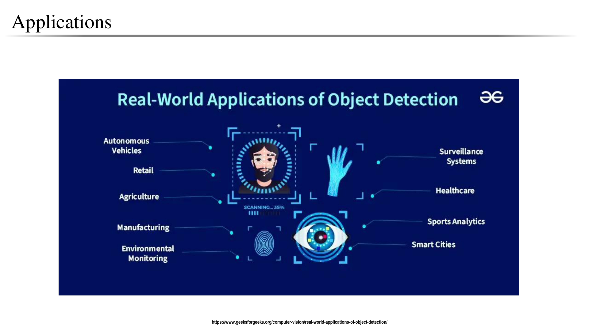
그림은 자율주행·유통·농업·제조·환경·보안·스포츠 등 검출의 활용 범위를 보여줍니다. 예를 들어 차량 검출은 ‘차가 있다’는 결과를 제공하고, 차선 침범이나 충돌 위험 판단에는 위치·시간·거리 정보가 추가로 필요합니다.
작은 결함을 찾는 제조 검사와 멀리 있는 사람을 찾는 영상 분석은 같은 검출 문제라도 필요한 해상도와 오검출·누락 비용이 다릅니다. 사용 목적에 따라 정확도, 지연 시간, 놓치면 안 되는 대상의 크기를 함께 정해야 합니다.
Challenges — 크기·가림·자세·배경 변화
자료: PDF 5쪽.
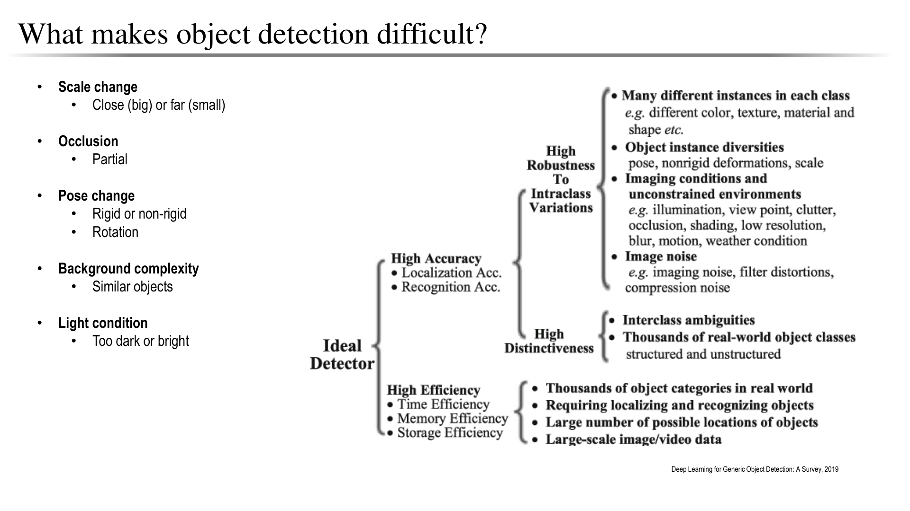
가까운 물체와 먼 물체는 픽셀 크기가 다르고, 가림이나 회전은 관찰 가능한 특징을 바꿉니다.
비슷한 배경과 어두운 조명에서는 물체와 주변을 구분하기도 어려워집니다.
그림의 이상적인 검출기는 이런 변화에 강하면서 클래스 간에는 잘 구분해야 합니다.
다중 해상도 특징은 크기 차이, 증강은 관찰 조건 변화, 문맥 정보는 부분 가림을 다루는 데 도움을 줍니다.
다만 작은 물체의 정보가 입력에서 사라지면 구조를 바꾸는 것만으로 복구할 수 없으므로 입력 해상도와 데이터 품질도 중요합니다.
Rigid는 물체 자체의 형태가 유지되는 변화, Non-rigid는 물체의 형태가 변하는 변화를 뜻합니다.
| 구분 | 의미 | 예시 | |
|---|---|---|---|
| Rigid — 강체 | 부분 사이의 거리와 각도를 유지한 채 위치·방향이 바뀜 | 디텍팅이 쉬움 | 자동차가 회전하거나 상자가 기울어짐 |
| Non-rigid — 비강체 | 부분들이 상대적으로 움직여 모양이 바뀜 | 디텍팅이 어려움 | 사람이 팔을 들거나, 강아지가 몸을 굽힘 |
객체 검출에서 보면, 자동차는 방향이 달라져 보이는 특징이 바뀌고, 사람은 팔다리 자세까지 달라져 윤곽이 바뀝니다. 모델은 이런 변화에도 같은 종류의 물체임을 알아봐야 합니다.
사람의 관절 움직임은 더 엄밀하게는 **관절형 변형(articulated deformation)**이라고 부릅니다.
1.2 검출 평가 지표
Detection metric (1/4) — IoU
자료: PDF 6쪽.
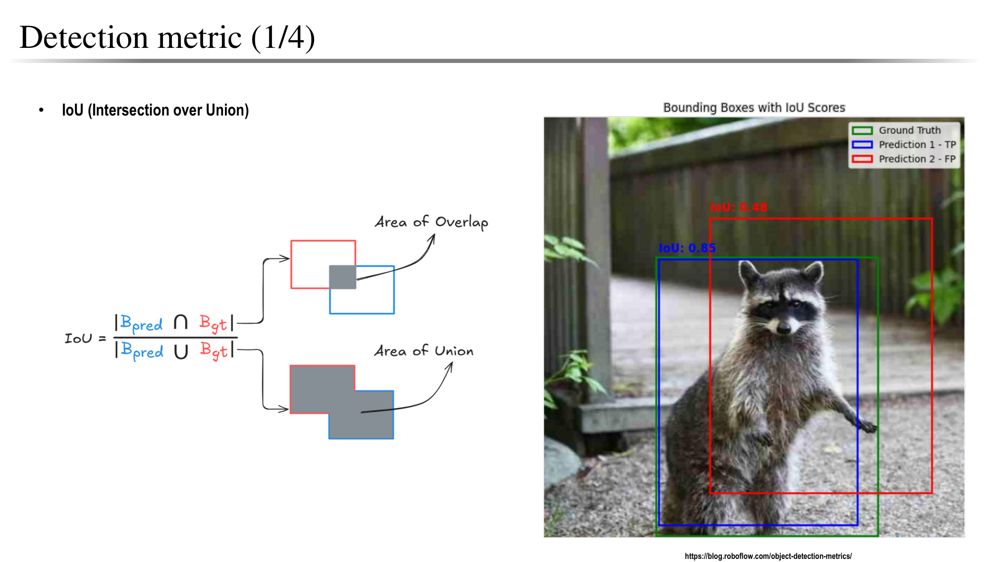
IoU는 예측 박스 P와 정답 박스 G가 겹치는 면적을 두 박스의 합집합 면적으로 나눈 값입니다.
완전히 일치하면 1, 겹치지 않으면 0입니다.
그림의 녹색 정답과 더 잘 겹치는 예측 박스가 높은 값을 얻습니다. IoU는 위치의 일치도이며 클래스의 정답 여부와는 별개입니다.
큰 박스로 물체를 대충 덮으면 교집합뿐 아니라 합집합도 커져 점수가 낮아집니다.
IoU의 Threashold와 클래스의 확률분포값을 조절하여 detect하였다 여부를 판별해야 한다.
Detection metric (2/4) — TP·FP·FN과 중복 예측
자료: PDF 7쪽.
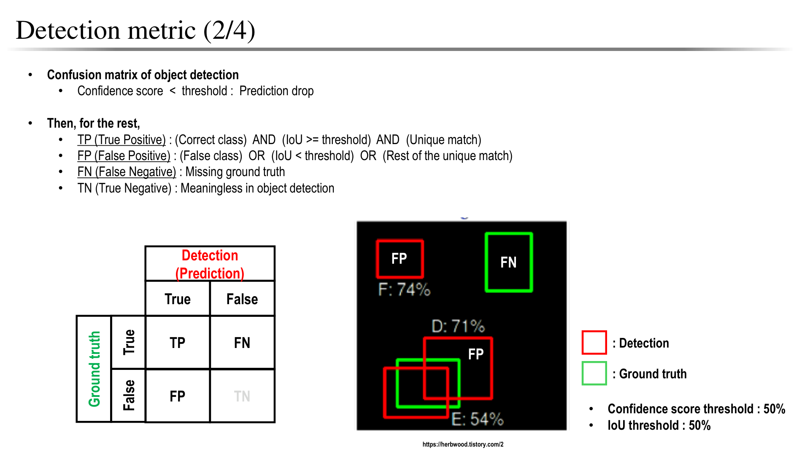
먼저 Confidence 임계값으로 예측을 선택하고, 클래스와 IoU를 기준으로 정답에 연결합니다. 같은 정답 물체에 여러 예측이 겹쳐도 정답과 연결되는 예측은 하나이며, 나머지는 중복 FP가 됩니다.
| 결과 | 의미 |
|---|---|
| TP | 올바른 클래스이며 IoU 기준을 만족하고 아직 연결되지 않은 정답에 매칭 |
| FP | 잘못된 클래스·위치, 배경 검출 또는 중복 예측 |
| FN | 어떤 예측과도 매칭되지 않은 정답 |
슬라이드의 점수 0.5와 IoU 0.5는 예시입니다.
두 임계값은 역할이 다릅니다. 잘못된 클래스의 예측은 FP가 되면서 원래 정답이 FN으로 남을 수도 있습니다.
배경 영역의 수를 유한하게 세기 어려워 검출에서는 TN을 중심 지표로 사용하지 않습니다.
- Confidence threshold:
- 예측 점수가 기준 이상인 박스를 검출 결과로 남깁니다.
- 점수 계산 방식은 모델마다 다르므로, 항상 ‘클래스 확률’이라고 부르기는 어렵습니다.
- NMS(Non-Maximum Suppression)의 IoU threshold:
- 남은 박스끼리 비교해 중복 검출을 제거합니다.
- 평가의 IoU threshold:
- 예측 박스와 정답 박스를 비교해 위치가 맞는지 판정합니다.
- 실제 추론에서는 정답 박스를 모르므로 이 기준을 직접 사용할 수 없습니다.
다음처럼 설명하면 더 정확합니다.
추론에서는 Confidence 임계값으로 검출 후보를 선택하고, 필요한 경우 IoU 기반 NMS로 중복을 제거한다. 평가에서는 클래스 일치 여부와 정답 박스에 대한 IoU, 일대일 매칭 여부로 올바른 검출(TP)을 판정한다.
또한 임계값은 점수나 확률분포 자체를 바꾸는 것이 아니라, 어떤 예측을 채택할지 결정하는 기준입니다.
Detection metric (3/4) — Precision·Recall·F1
자료: PDF 8쪽.
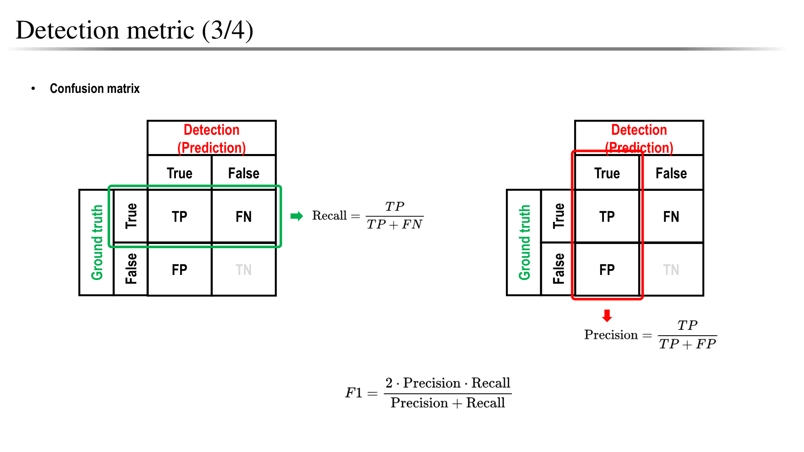
- Precision은 ‘검출했다고 한 것 중 얼마나 맞는가’,
- Recall은 ‘실제 물체 중 얼마나 찾았는가’입니다.
- 사용 예: 의료계에서 환자의 암으로 추정되는 부분을 찾는 것은 Negative가 있더라도 많이 찾는 행위가 중요하다.
정답 10개 중 8개를 찾고 잘못된 박스 2개를 추가하면 TP=8, FP=2, FN=2로 두 값 모두 0.8입니다.
점수 임계값을 낮추면 약한 예측도 남아 Recall이 높아질 수 있지만 FP도 늘 수 있습니다.
단일 임계값의 F1과 여러 점수 임계값을 훑는 AP는 다른 평가입니다.
Detection metric (4/4) — AP·mAP·COCO 평가
자료: PDF 9쪽.
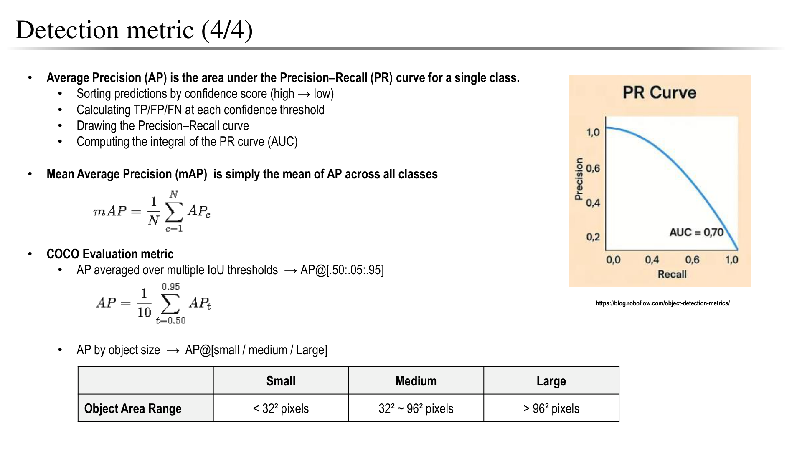
한 클래스의 예측을 점수순으로 정렬하고, 예측을 순차적으로 포함하며 Precision–Recall 곡선을 만듭니다.
PR Curve의 면적은 1x1=1이며, AP는 이 곡선 아래 면적을 정확도로 표현하며, 이를 정해진 보간·샘플링 규칙으로 요약한 값입니다.
mAP는 클래스별 AP의 평균입니다. - 가장 많이 사용하는 지표
| 표기 | 비교하는 조건 |
|---|---|
| AP50 | IoU 0.50에서의 AP |
| AP75 | IoU 0.75에서의 AP로 더 정밀한 박스 요구 |
| COCO AP | IoU 0.50~0.95를 0.05 간격으로 평가해 평균 |
| AP small·medium·large | 물체 면적별 성능 |
같은 ‘mAP’라도 VOC AP50과 COCO AP는 직접 비교할 수 없습니다.
작은 물체 성능이 낮아도 큰 물체가 많으면 전체 수치에 가려질 수 있으므로 크기별 지표도 확인합니다.
1.3 검출기의 발전과 구조
Evolution — 특징 설계에서 집합 예측까지
자료: PDF 10쪽.
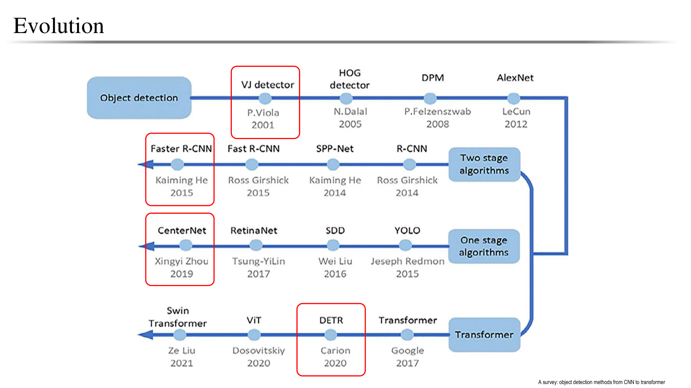
그림의 흐름은 사람이 특징을 설계하던 검출기에서 CNN 특징 학습, 계산 공유, 중심점 예측, Transformer 기반 집합 예측으로 이어집니다.
이 노트는 R-CNN의 후보별 계산 → Fast/Faster R-CNN의 계산 공유 → CenterNet의 중심점 → DETR의 Query 집합을 중심으로 읽습니다.
연대표는 연구 방향의 개요입니다.
발표·사전 공개·학회 출판 연도가 섞일 수 있으며, 나중에 나온 방식이 모든 데이터와 실행 환경에서 앞선 방식을 대체한다는 뜻은 아닙니다.
One-stage vs. Two-stage — 후보 영역을 먼저 만들까?
자료: PDF 11쪽.
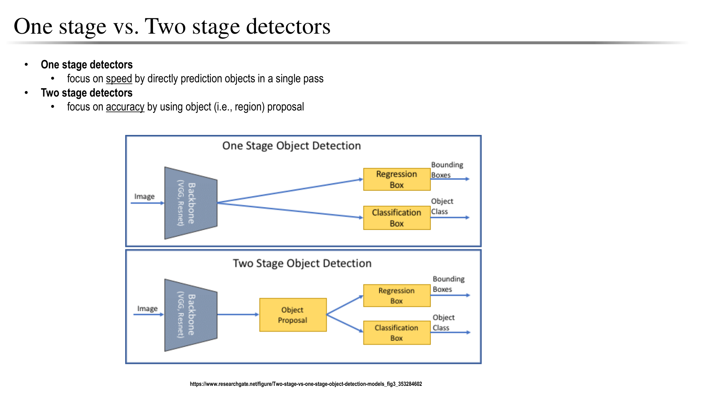
One-stage와 Two-stage의 차이점은 Object Propsal 이다.
그림은 두 단계의 기능적 차이를 나타냅니다.
- Two-stage는 물체 후보 영역을 만든 뒤 각 후보의 클래스와 박스를 정교하게 예측합니다.
- One-stage는 특징 맵에서 클래스와 위치를 직접 예측합니다.
전통적으로 One-stage는 속도, Two-stage는 정확도가 강조됐지만 이는 절대 규칙이 아닙니다.
Backbone·해상도·학습·구현에 따라 결과가 달라집니다. 또한 One-stage가 반드시 Anchor 기반인 것은 아니며, 뒤의 CenterNet은 Anchor-free 방식입니다.
1.4 Viola–Jones
Viola–Jones — 빠르게 비얼굴 영역을 제외하기
자료: PDF 12쪽.

밝고 어두운 직사각형 영역의 차이를 나타내는 Haar-like 특징을 사용하고, Integral image로 영역 합을 빠르게 계산합니다. AdaBoost는 유용한 특징과 약한 분류기를 선택해 강한 분류기를 구성합니다.
Cascade는 쉬운 단계부터 적용해 얼굴이 아닌 대부분의 영역을 일찍 탈락시키고, 남은 후보에 더 많은 계산을 씁니다. CNN 이전 검출기의 대표적 설계이며, 정면 얼굴에서 효과적이지만 큰 자세·조명 변화에는 제약이 있습니다.
1.5 R-CNN 계열과 NMS
R-CNN — 후보마다 CNN을 적용하기
자료: PDF 13쪽.
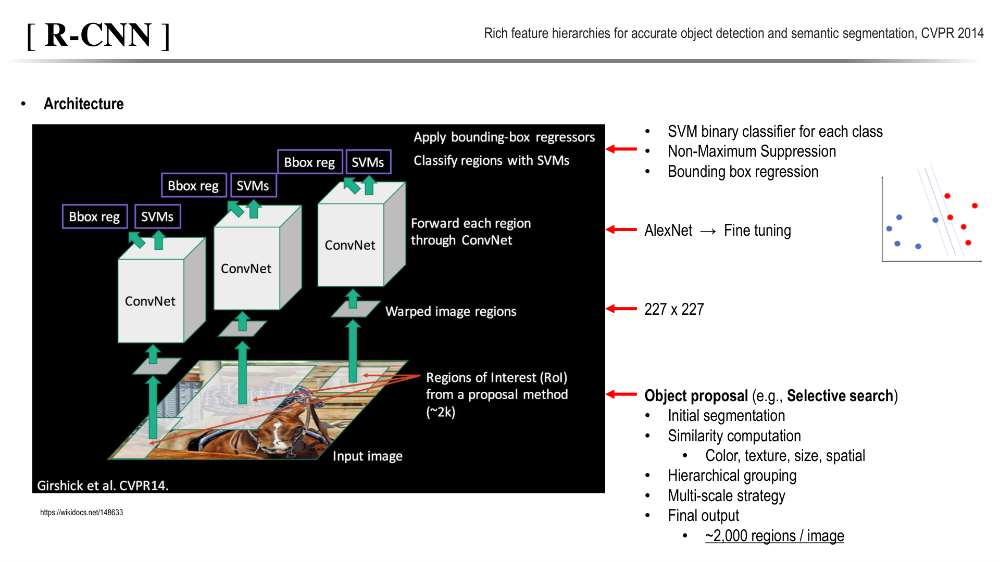
**Selective Search(Object proposal)**로 약 2,000개의 후보 영역을 찾고, 각 영역을 227×227로 변형해 CNN 특징을 추출합니다.
클래스별 SVM이 물체를 분류하고, 박스 회귀기가 좌표를 보정한 뒤 NMS로 중복을 줄입니다.
Selective Search는 색·질감·크기 등의 유사성으로 작은 영역을 계층적으로 합치는 후보 생성법입니다.
서로 크게 겹치는 후보도 CNN을 각각 통과하므로 계산이 반복되는 점이 R-CNN의 큰 비용입니다.
NMS — 같은 물체의 중복 박스 줄이기
자료: PDF 14쪽.

Selective Search(Object proposal) 에서 많은 후보군이 생성되어 연산처리량(비용)이 늘어난다.
그래서 점수가 가장 높은 박스를 남기고, 그 박스와 IoU가 임계값보다 큰 같은 클래스의 나머지 박스를 제거합니다.
남은 박스에서 이 과정을 반복하는 것이 기본적인 Greedy NMS입니다.
NMS는 실제 정답을 보고 ‘가장 정확한 박스’를 고르는 것이 아니라 점수와 겹침만으로 선택합니다.
가까이 붙은 다른 물체까지 지울 수 있어 임계값이 중요합니다.
점수 필터링과 NMS는 각각 약한 예측과 중복 예측을 다루는 별도 단계입니다.
Fast R-CNN — 이미지 특징을 한 번만 계산하기
자료: PDF 15쪽.
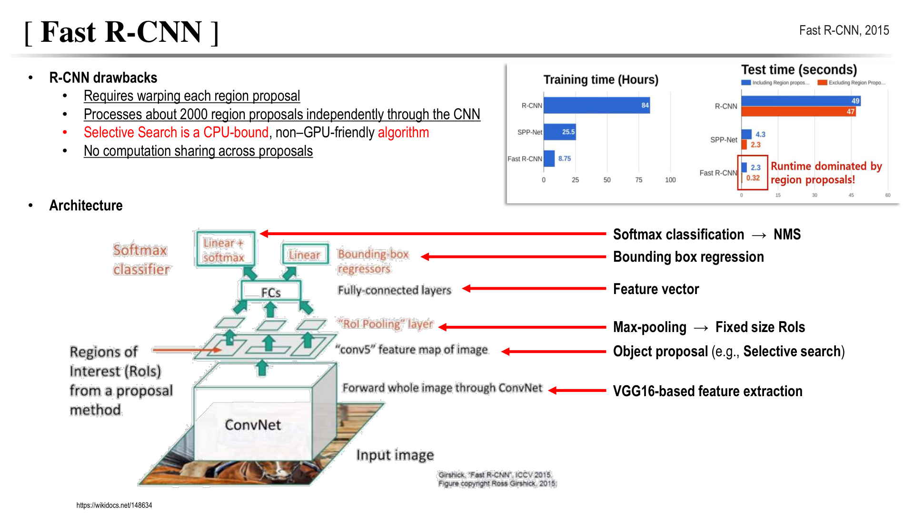
기존 R-CNN이 후보 데이터량이 많아 계산이 많아지는 문제점이 있으므로 이를 해결하기 위해
- 전체 이미지를 CNN에 한 번 넣어 특징 맵을 만든 뒤, 후보 영역을 이 맵 위로 옮깁니다.
- RoI Pooling이 서로 다른 크기의 후보를 고정 크기 특징으로 바꾸고, 분류와 박스 회귀를 함께 수행합니다.
후보마다 원본 픽셀에서 CNN을 다시 돌리던 계산을 공유하는 것이 핵심입니다.
그러나 후보 생성은 여전히 외부 Selective Search에 의존합니다.
그림의 실행 시간은 후보 생성 포함 여부에 따라 크게 달라지므로, CNN 부분의 속도만으로 전체 지연을 판단하면 안 됩니다.
속도측면에서 R-CNN대비 Fast R-CNN의 성능이 20배 이상 빠르다. 단, CPU에서 동작하는 알고리즘이라서 개선 포인트가 존재한다.
Faster R-CNN — 학습하는 후보 생성기 RPN
자료: PDF 16쪽.
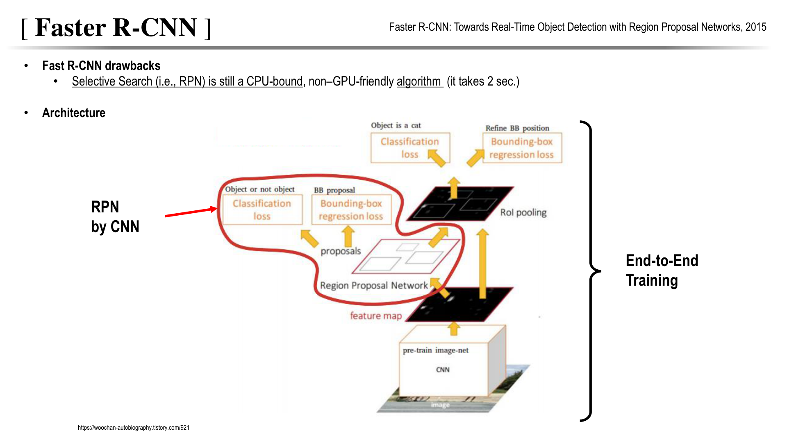
Faster R-CNN은 Fast R-CNN을 개선하여 후보군을 분류할 때, CPU대신 GPU 알고리즘으로 Selective Search를 **공유 CNN 특징 위에서 동작하는 Region Proposal Network(RPN)**로 바꿉니다.
RPN이 물체 가능성과 후보 박스를 예측하고, RoI 기반 검출 Head가 최종 클래스·좌표를 정합니다.
슬라이드의 ‘Selective Search (i.e., RPN)’은 두 방식이 같다는 뜻으로 읽으면 안 됩니다.
Selective Search는 기존의 비학습 후보 생성이고, RPN은 이를 대체하는 학습 네트워크입니다. 핵심 이득은 후보 생성과 검출에서 특징을 공유하는 것입니다.
RPN (1/2) — Objectness와 박스 보정 학습
자료: PDF 17쪽.
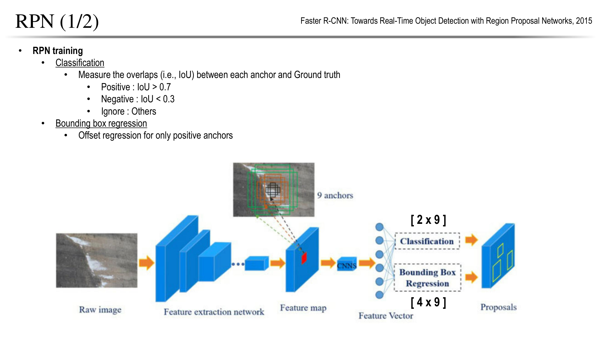
RPN은 Faster R-CNN의 주요 특징입니다.
**각 특징 맵 위치의 Anchor마다 ‘물체인가(객체인가)’와 네 좌표 보정값을 예측(예/아니오 로)**합니다.
Anchor가 9개라면 그림의 분류 출력은 2×9, 회귀 출력은 4×9입니다. 이는 최종 물체 종류 9개를 의미하지 않습니다.
Anchor와 정답의 IoU가 높은 경우 Positive, 낮으면 Negative로 삼고 애매한 경우는 제외합니다.
슬라이드의 0.7·0.3 기준 외에도 원 방식은 각 정답과 가장 높은 IoU를 갖는 Anchor를 Positive로 지정합니다.
회귀 손실은 Positive Anchor에만 적용합니다.
RPN (2/2) — Anchor의 크기와 종횡비
자료: PDF 18쪽.
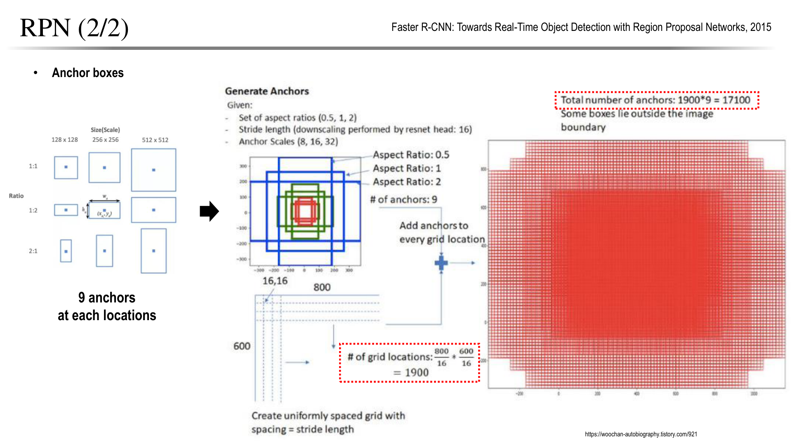
Anchor boxes 분류
내가 찾은 box가 객체인지 아닌지 예/아니오 로 분류.
- 서로 다른 크기와 가로세로 비율의 기준 박스를 각 격자 위치에 배치합니다.
- 3개 크기×3개 비율이면 위치마다 9개입니다.
- 물체가 어느 위치·모양에 가까운지 기준을 제공하고, 회귀가 그 기준에서 정답까지의 이동·크기 변화를 학습합니다.
Anchor 수는 특징 맵 높이×너비×위치당 Anchor 수입니다.
입력 크기와 특징 맵의 Stride가 달라지면 총수도 달라지므로, 슬라이드의 17,100개는 해당 격자 예시의 값입니다.
Faster R-CNN Loss — 분류와 위치를 함께 학습하기
자료: PDF 19쪽.
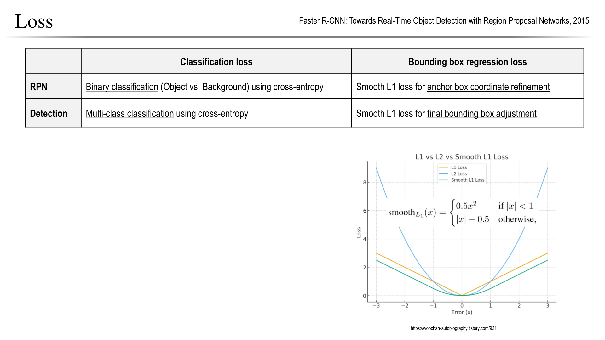
RPN은 Object/Background 분류와 후보 박스 회귀, 최종 검출 Head는 다중 클래스 분류와 최종 박스 회귀를 수행합니다.
배경 후보에는 물체 좌표를 맞추는 회귀 손실을 적용하지 않습니다.
그림의 Smooth L1은 작은 오차에서 이차식, 큰 오차에서 일차식으로 동작합니다.
L2보다 큰 오차의 영향을 완화하면서 작은 오차를 부드럽게 줄입니다.
전체 손실은 각 항의 정규화와 가중치를 포함하므로 서로 다른 역할의 손실값을 단순 크기만으로 비교하면 안 됩니다.
Faster R-CNN Experiments — 정성 결과 읽기
자료: PDF 20쪽.
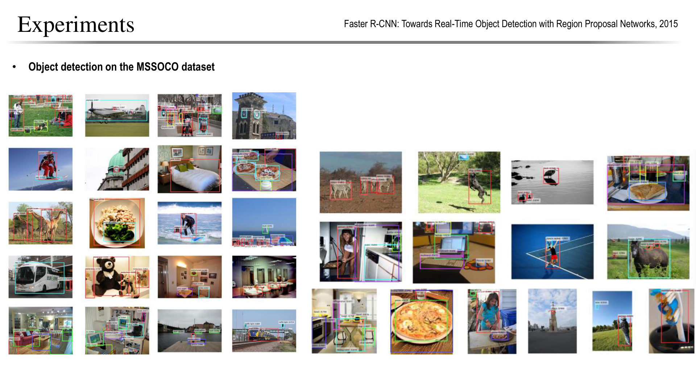
여러 장면에서 크기·배경·물체 수가 달라도 박스와 클래스가 생성되는 모습을 보여줍니다.
작은 대상이나 겹친 물체의 박스가 있는지, 배경을 물체로 잘못 검출하는지, 하나를 여러 번 잡는지를 살펴보면 됩니다.
이 페이지는 성공·실패 사례를 보는 정성 시각화이며 AP나 속도 비교표는 아닙니다. 몇
장의 예시만으로 전체 정확도나 특정 크기의 물체 성능을 확정할 수는 없습니다. 슬라이드의 MSSOCO는 MS COCO를 가리킵니다.
Two-stage Summary — 반복 계산을 없앤 두 번의 개선
자료: PDF 21쪽.
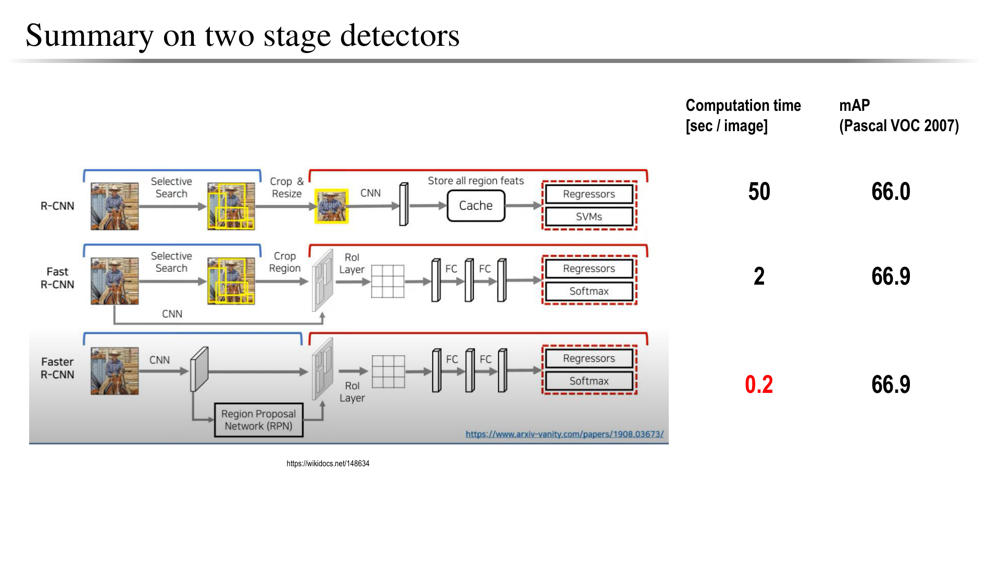
| 방식 | CNN 계산 | 후보 생성 | 슬라이드 시간·VOC 2007 mAP |
|---|---|---|---|
| R-CNN | 후보마다 독립 계산 | Selective Search | 50초·66.0 |
| Fast R-CNN | 전체 이미지의 특징 공유 | Selective Search | 2초·66.9 |
| Faster R-CNN | 특징 공유 | 학습형 RPN | 0.2초·66.9 |
그림의 요점은
- Fast에서 후보별 CNN 중복을 줄이고,
- Faster에서 후보 생성 병목을 줄였다는 것입니다.
표의 시간은 강의에서 제시한 역사적 설정의 예이며 현대 장비의 보장 속도가 아닙니다. 같은 mAP가 모든 실험 조건에서 유지된다는 의미도 아닙니다.
1.6 CenterNet
CenterNet Overview — 물체를 중심점으로 표현하기
(One-stage)
자료: PDF 22쪽.
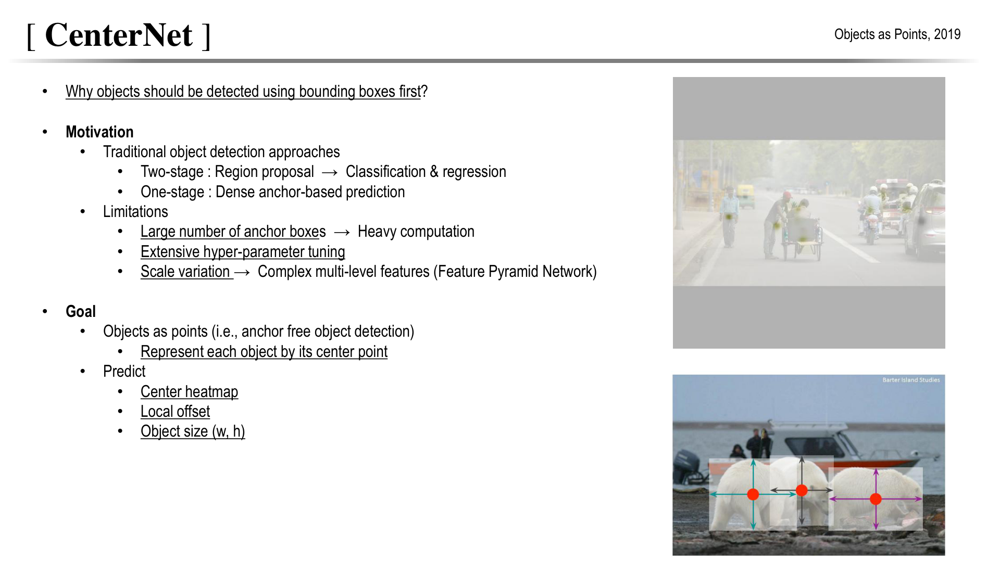
여기서 CenterNet은 Objects as Points의 방법입니다.
미리 정한 Anchor를 다수 분류하는 대신 클래스별 중심점 Heatmap, Local offset, 물체 폭·높이를 예측합니다.
슬라이드의 Predict 3개는 하나의 박스를 만들기 위한 서로 다른 예측입니다.
- Center heatmap: “어떤 클래스의 물체 중심이 어디에 있는가?”
- Local offset: “거친 출력 격자에서 중심이 얼마나 어긋나 있는가?”
- Object size: “그 중심에 있는 물체의 박스 폭과 높이는 얼마인가?”
Heatmap으로 중심 후보와 클래스를 찾은 뒤, 같은 위치의 Offset과 Size를 읽어 최종 박스를 복원합니다.
세 값은 공통 특징 맵 위의 서로 다른 Head에서 예측합니다.
중심을 찾은 뒤 폭·높이로 박스를 복원하므로 Anchor 크기·비율 설계를 줄일 수 있습니다.
다만 겹친 중심, 작은 물체, 출력 격자의 양자화는 여전히 어려운 문제입니다.
‘박스를 쓰지 않는다’가 아니라 박스를 중심점 기반으로 계산한다는 뜻입니다.
CenterNet Architecture — Heatmap·Offset·Size
자료: PDF 23쪽.
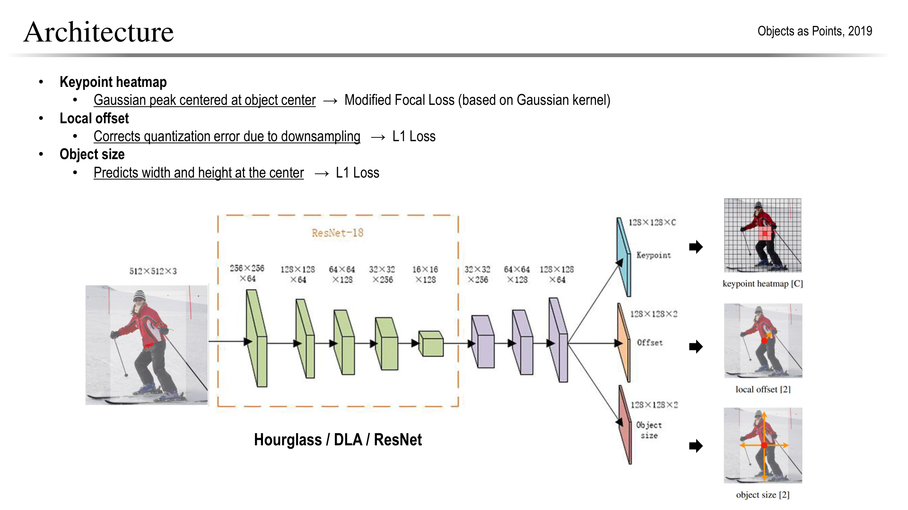
| Head | 예측 | 학습 목적 |
|---|---|---|
| Keypoint heatmap | 클래스별 중심의 봉우리 | Gaussian 목표를 이용하는 수정 Focal Loss |
| Local offset | 격자화로 사라진 소수 좌표 | 중심 위치의 L1 보정 |
| Object size | 중심에서의 폭·높이 | 정답 크기의 L1 회귀 |
1. Center heatmap — 중심 위치와 클래스
- 이미지의 각 출력 격자에서 클래스별로 물체 중심일 가능성을 나타내는 점수를 예측합니다.
- 입력이 512×512, 출력 Stride가 4, 클래스가 80개이면 Heatmap 크기는
128×128×80입니다. - 물체의 전체 영역을 칠하는 분할 마스크가 아니라 중심 부근에 봉우리가 생기는 지도입니다.
- 학습 시 정답 박스의 중심을 출력 격자로 옮겨 Gaussian 모양의 목표를 만듭니다.
- 수정 Focal Loss는 중심을 잘 찾게 하면서 중심 주변의 약간 어긋난 위치에 대한 Negative 벌점을 완화합니다.
- 추론에서는 국소 최댓값인 봉우리들을 중심 후보로 선택합니다.
- 클래스별 점수는 Sigmoid로 계산하므로 한 위치의 80개 점수 합이 1이 되는 Softmax 분포는 아닙니다.
- 봉우리의 채널이 물체 클래스, 값이 검출 점수 역할을 합니다.
2. Local offset — 격자화로 생긴 중심 좌표 오차
- 출력 해상도를 줄이면 실제 중심 좌표를 정수 격자로 표현하면서 소수 부분을 잃습니다.
- 예를 들어 입력 중심이
(101, 79)이고 Stride가 4이면 출력 좌표는(25.25, 19.75)인데, 중심을 배치한 정수 격자는(25, 19)입니다. - Offset Head는 이때 잃어버린 **출력 격자 단위의 보정값
(0.25, 0.75)**를 예측합니다. - 출력 크기는
128×128×2이고 두 채널은 x·y 보정입니다. - 원 방식에서는 클래스별로 따로 만들지 않고 공유합니다.
- 학습은 정답 중심 위치에서 L1 손실로 수행합니다.
- 따라서
4×(25+0.25)=101,4×(19+0.75)=79로 중심을 복원합니다. Offset은 물체의 이동 속도나 박스 폭·높이를 뜻하지 않습니다.
3. Object size — 중심에서 박스 폭·높이 예측
- Size Head는 해당 물체의 축 정렬 Bounding box의 폭 w와 높이 h를 예측합니다.
- 이 예의 출력 크기도
128×128×2이지만, 두 채널의 의미는 x·y 보정이 아니라 폭·높이입니다. - 기본 방식에서는 크기도 클래스 간에 공유하고, 정답 중심 위치에서 L1 손실로 학습합니다.
- 원 논문의 2D 검출에서는 크기를 모델 입력 이미지 좌표계의 픽셀 단위로 회귀합니다.
- 원본 이미지를 Resize하거나 Crop했다면 최종 박스를 원본 좌표계로 되돌리는 변환이 추가로 필요합니다.
세 예측을 합친 숫자 예시
| 단계 | 예측 또는 계산 | 의미 |
|---|---|---|
| Heatmap | 자동차 채널의 (u,v)=(25,19), 점수 0.9 |
자동차 중심 후보 선택 |
| Offset | (δx,δy)=(0.25,0.75) |
중심의 소수 위치 보정 |
| 중심 복원 | Stride 4 → (cx,cy)=(101,79) |
입력 이미지 좌표로 변환 |
| Size | (w,h)=(60,40) |
박스 폭 60, 높이 40 |
| 최종 박스 | (71,59,131,99) |
중심에서 좌우·상하로 반 크기만큼 확장 |
- 이 값들은 계산을 설명하기 위한 예시입니다.
- Heatmap은 중심·클래스, Offset은 중심 정밀도, Size는 박스 범위를 담당하므로 세 출력의 역할을 구분하면 됩니다.
출처: Objects as Points — §3·4의 Heatmap, Offset, Size 및 박스 복원.
CenterNet Applications (1/2) — Pose와 3D 박스
자료: PDF 24쪽.
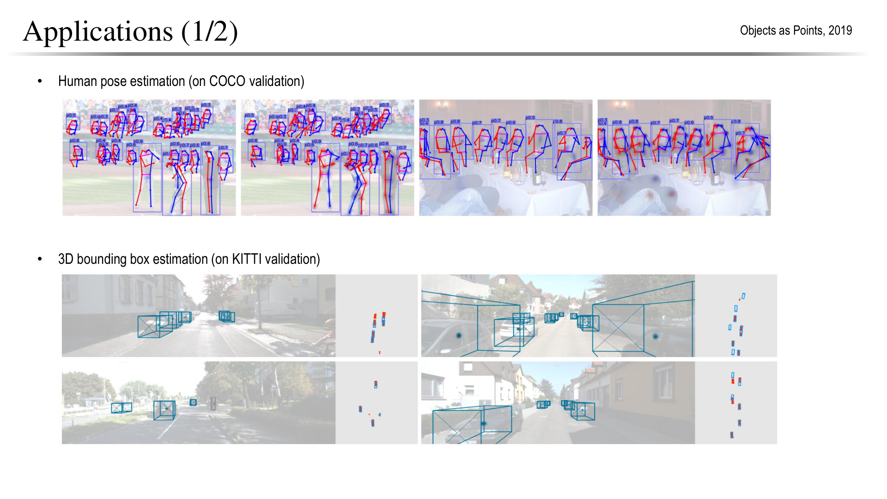
위쪽은 사람 관절을 예측하는 Pose estimation, 아래쪽은 도로 장면의 3D 박스 예시입니다.
- 중심점에서 추가 속성을 예측하는 틀을 관절 위치·깊이·회전 등으로 확장할 수 있음을 보여줍니다.
- 2D 중심·크기만으로 3D가 자동으로 복원되는 것은 아닙니다.
- 각 과제에 필요한 Head, 정답 주석과 손실이 추가됩니다.
- 적용 사례를 공통 표현의 확장으로 읽되 학습 목표까지 같은 것으로 보지 않아야 합니다.
CenterNet Experiments — 정확도와 시간의 교환
자료: PDF 26쪽.
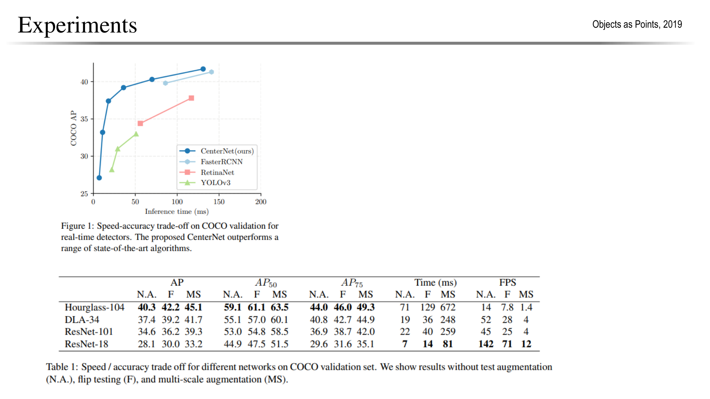
그래프는 가로축이 추론 시간(ms), 세로축이 COCO AP이므로 왼쪽 위일수록 유리합니다. 같은 CenterNet도 Backbone과 추론 증강에 따라 결과가 달라집니다.
| Backbone | 증강 없음 AP / 시간 | Flip AP / 시간 | Multi-scale AP / 시간 |
|---|---|---|---|
| ResNet-18 | 28.1 / 7ms | 30.0 / 14ms | 33.2 / 81ms |
| DLA-34 | 37.4 / 19ms | 39.2 / 36ms | 41.7 / 248ms |
| Hourglass-104 | 40.3 / 71ms | 42.2 / 129ms | 45.1 / 672ms |
- DLA-34는 ResNet-18보다 느리지만 더 정확합니다.
- Hourglass의 Multi-scale은 높은 AP를 얻는 대신 단일 입력보다 훨씬 많은 시간이 듭니다.
- 모델 구조와 추론 증강의 효과를 분리하고, 동일 장비·입력 조건에서 선택해야 합니다.
1.7 DETR
DETR — 검출을 순서 없는 집합 예측으로 보기
자료: PDF 27쪽.
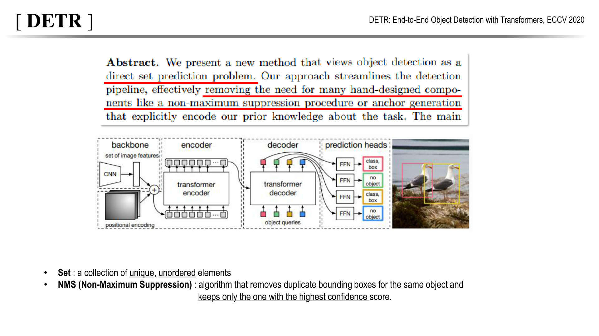
- DETR은 이미지의 물체들을 순서 없는 집합으로 예측합니다.
- 고정 개수의 출력 슬롯이 각각 클래스·박스를 만들고, 물체가 없는 슬롯은
no-object를 예측합니다.
핵심은 학습 시 예측과 정답을 일대일로 연결해 하나의 물체를 여러 슬롯이 중복 설명하지 않게 하는 것입니다.
기본 DETR은 별도 Anchor 설계나 박스 NMS를 필요로 하지 않습니다. 출력 개수의 상한은 Query 수에 의해 정해집니다.
DETR Overview — 수작업 후처리를 학습 목표로 흡수하기
자료: PDF 28쪽.
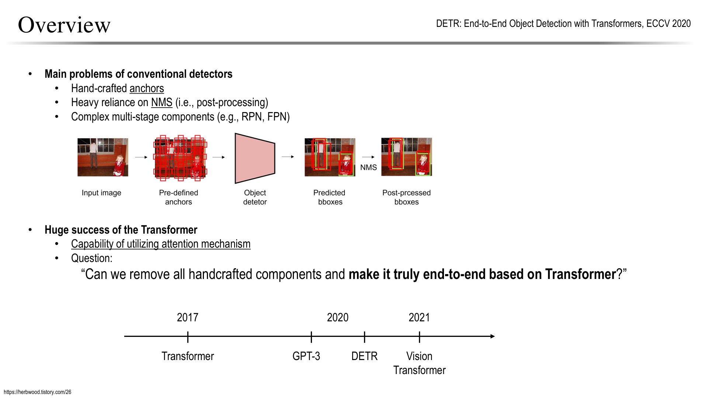
기존 검출기는 Anchor 설정, 후보 생성, 중복 제거가 복잡하게 얽혀 있습니다.
DETR은 CNN 특징과 Transformer Encoder–Decoder, 집합 손실을 연결해 검출을 끝까지 학습합니다.
Transformer가 전체 특징의 관계를 다루고 Query가 각 물체를 찾습니다.
End-to-end라는 말은 전처리·점수 선택까지 모두 없다는 뜻은 아니며, 별도 RPN과 Greedy NMS에 기대던 검출 구성을 단순화했다는 의미입니다.
DETR Architecture (1/2) — Encoder·Decoder·Object queries
자료: PDF 29쪽.
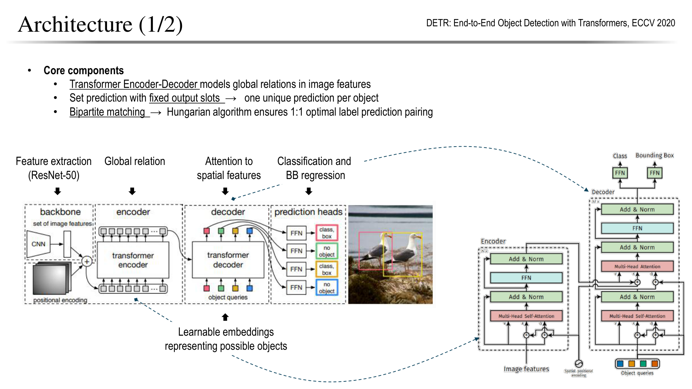
- CNN이 공간 특징을 추출하고, 위치 정보를 더한 특징이 Encoder를 통과합니다.
- Decoder의 학습 가능한 Object query는 이미지 특징에 Cross-Attention하여 슬롯별 출력을 만듭니다.
- 공통 Head가 이를 클래스와 정규화 박스 좌표로 바꿉니다.
Decoder에서 미리 정하는 것은 ‘객체’가 아니라 ‘Query 슬롯 수’
- DETR은 고정 개수 N의 학습 가능한 Object query 벡터를 사용합니다.
- 원 DETR의 대표 설정은 N=100이며, 각 Query는 한 물체의 예측을 담당할 수 있는 슬롯입니다.
- ‘검출할 객체가 미리 정해져 있다’기보다 예측을 담을 자리 100개를 미리 준비한다고 이해하면 됩니다.
| 구분 | 무엇이 정해지거나 달라질까? |
|---|---|
| Query 개수 N과 차원 d | 설계할 때 정하는 하이퍼파라미터 |
| N×d개의 Query embedding 값 | 학습 데이터와 손실을 통해 갱신되는 파라미터 |
| 학습 후 추론에 넣는 Query embedding | 이미지마다 새로 학습하지 않고 같은 값을 재사용 |
| Decoder가 출력하는 물체 표현·클래스·박스 | 현재 이미지 특징을 참고하므로 이미지마다 달라짐 |
예를 들어
- 사람 2명과 자동차 1대가 있는 이미지에서도 100개 슬롯의 예측은 모두 계산합니다.
- 학습에서는 그중 3개를 정답 물체에 일대일로 연결하고, 나머지는
no-object를 예측하도록 합니다. - 추론에서는 점수와
no-object예측 등을 바탕으로 유효한 결과를 선택합니다.
Query 1은 항상 사람, Query 2는 항상 자동차처럼 클래스를 미리 배정하지 않습니다.
같은 Query도 입력에 따라 다른 물체나 no-object를 예측할 수 있습니다.
학습 과정에서 위치·크기에 대한 선호가 생길 수는 있지만, 사람이 지정한 고정 클래스·박스와는 다릅니다.
검출 가능한 클래스 목록은 분류 Head의 학습 설정으로 정하며 Query 수와 별개입니다.
Decoder의 Self-Attention은 슬롯 사이 관계를 조정하고, Cross-Attention은 각 슬롯이 현재 이미지의 정보를 참고하게 합니다.
기본 DETR은 이 슬롯들의 출력을 병렬로 계산합니다.
출처: DETR 원 논문 §3.2 — Transformer Decoder와 Object queries.
DETR Architecture (2/2) — 차원으로 데이터 흐름 확인하기
자료: PDF 30쪽.

- 입력이
3×H0×W0이면 CNN은 예를 들어2048×h×w특징을 만듭니다. - 1×1 Conv로 채널을 d로 줄이고 공간을 펼쳐
hw×d토큰을 얻습니다. - 위치 정보는 펼친 뒤에도 원래 위치를 구분하게 합니다.
- N개 Object query의 Decoder 출력은
N×d, 클래스 Head는N×(C+1), 박스 Head는N×4입니다. - C+1의 추가 클래스는 no-object입니다.
N은 이미지 패치 수가 아니라 출력 슬롯 수이며, 이미지 토큰 수 hw와 구분합니다.
DETR Loss (1/2) — 먼저 짝을 정하고 학습하기
자료: PDF 31쪽.

정답 물체와 예측 슬롯의 순서는 일치하지 않습니다.
- 매칭
- 그림의 의자 배치 비유처럼, 클래스와 위치가 가장 잘 맞는 일대일 배치를 먼저 찾습니다. 그 뒤 연결된 쌍의 오차를 줄입니다.
- 일대일 Matching이 없으면 여러 슬롯이 같은 물체만 예측해도 유리할 수 있습니다.
Hungarian matching은 학습용 정답 할당이고 NMS는 추론 후 중복 박스 제거이므로 서로 같은 연산이 아닙니다.
DETR Loss (2/2) — Hungarian matching과 집합 손실
자료: PDF 32쪽.

- Matching 비용은 클래스 적합도와 박스 L1·GIoU 비용을 결합합니다.
- 최적 매칭을 고른 뒤 클래스 Cross-Entropy와 박스 회귀 손실을 계산합니다.
- 답이 없는 슬롯에는 no-object 분류 목표를 줍니다.
그림의 ①·②·③ — 어떤 예측을 어떤 정답에 연결할까?
세 번호는 위쪽 Matching 비용을 구성하는 항을 가리킵니다.
정답 i의 클래스는 \(c_i\), 박스는 \(b_i\), 그 정답에 연결할 예측 슬롯은 \(\sigma(i)\)입니다.
Hungarian algorithm은 각 쌍의 비용을 더했을 때 전체 합이 가장 작은 일대일 연결을 찾습니다.
| 번호 | 수식 항 | 비교하는 내용 | 비용이 작아지는 조건 |
|---|---|---|---|
| ① | \(-\hat p_{\sigma(i)}(c_i)\) | 정답 클래스에 대한 예측 확률 | 정답 클래스 확률이 높음 |
| ② | \(\lambda_{iou}\mathcal L_{GIoU}\) | 두 박스의 겹침과 공간적 배치 | 박스가 잘 겹치고 정답과 가까운 배치 |
| ③ | \(\lambda_{L1}\lVert b_i-\hat b_{\sigma(i)}\rVert_1\) | 박스 좌표·크기의 직접적인 차이 | 중심 위치와 폭·높이의 오차가 작음 |
① 클래스 비용 — 정답 종류를 잘 예측했는가?
- 정답이 사람이라면 각 슬롯의 사람 클래스 확률을 읽어 음수를 취합니다.
- 예측 A가 0.9, B가 0.2라면 비용은 각각 −0.9와 −0.2입니다.
- 최소화할 때 더 작은 −0.9가 유리하므로 A를 사람 정답에 연결하려는 방향으로 작동합니다.
그림의 지시 함수 \(\mathbf1_{\{c_i\ne\varnothing\}}\)는 실제 물체가 있는 정답에만 해당 비용을 적용한다는 표시입니다. \(\varnothing\)는 출력 슬롯 수를 맞추기 위해 채운 no-object입니다.
② GIoU 비용 — 박스가 공간적으로 잘 맞는가?
- 두 박스의 겹침을 평가하되, 겹치지 않는 경우에도 두 박스를 감싸는 영역의 빈 공간을 반영합니다.
- 손실을 \(1-GIoU\)로 쓰면 완전히 일치할 때 0이고, 공간적으로 잘 맞지 않을수록 커집니다.
- 자세한 계산은 다음
IoU vs. GIoU항목에서 설명합니다.
이 항은 확률분포가 아니라 박스의 기하학적 관계를 비교합니다. \(\lambda_{iou}\)는 전체 비용에서 이 항의 비중을 정합니다.
③ L1 비용 — 중심과 크기가 얼마나 다른가?
DETR의 박스를 정규화된 (cx, cy, w, h)로 표현하면, 두 박스의 네 성분 차이에 절댓값을 취해 더합니다.
예를 들어
- 정답이
(0.5, 0.5, 0.4, 0.2), - 예측이
(0.6, 0.5, 0.3, 0.2)라면 - L1 오차는
0.1+0+0.1+0=0.2입니다. - 여기에 \(\lambda_{L1}\)을 곱합니다.
- GIoU는 영역의 관계를, L1은 좌표·크기의 차이를 직접 보므로 함께 사용합니다.
Matching 비용과 최종 학습 손실의 차이
- 위쪽의 ①은 **연결을 고르기 위한 음의 클래스 확률 \(-p\)**이고,
- 아래 Hungarian loss의 분류 항은 **가중치를 학습하기 위한 음의 로그 확률 \(-\log p\)**입니다. 두 수식을 같은 값으로 읽으면 안 됩니다.
최적 연결 \(\hat\sigma\)를 정한 뒤에는 실제 물체 슬롯에 클래스·박스 손실을, no-object 슬롯에는 분류 손실을 적용합니다.
즉, 클래스·겹침·좌표를 함께 고려해 짝을 고르고, 고른 짝의 예측 오차를 줄이는 두 단계입니다.
박스 항은 실제 물체와 연결된 슬롯에 적용합니다.
기본 DETR에서는 이 학습 목표가 중복을 억제해 박스 NMS를 생략할 수 있습니다.
추론에 Hungarian matching으로 정답을 찾는 단계가 있는 것은 아닙니다.
IoU vs. GIoU — 겹치지 않는 박스에도 학습 신호 주기
자료: PDF 33쪽.
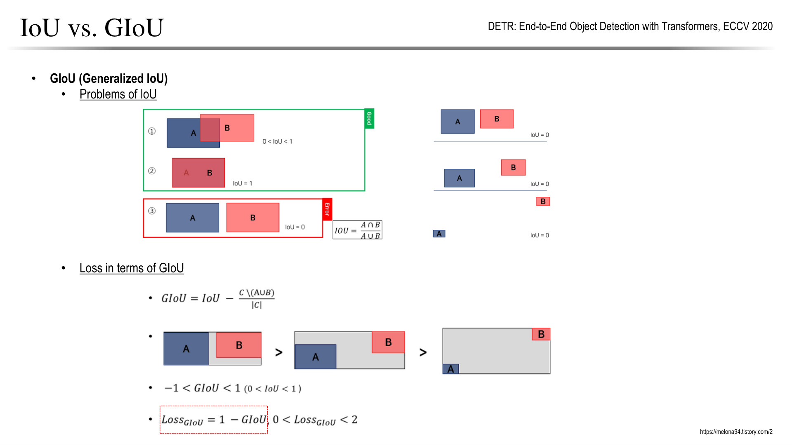
- IoU만 사용하면 두 박스가 겹치지 않을 때 모두 0이 되어 상대적인 거리를 표현하기 어렵습니다.
- GIoU는 두 박스를 모두 감싸는 가장 작은 축 정렬 박스 C의 빈 공간을 벌점으로 반영합니다.
GIoU는 음수가 될 수 있습니다.
- 완전 일치에서는 1이므로 손실은 0입니다.
- 비겹침에서 추가 신호를 제공하지만 모든 위치·크기 문제를 단독으로 해결하지는 않아 DETR은 L1과 함께 사용합니다.
DETR Experiments (1/2) — Attention에서 무엇을 참고할까?
자료: PDF 34쪽.
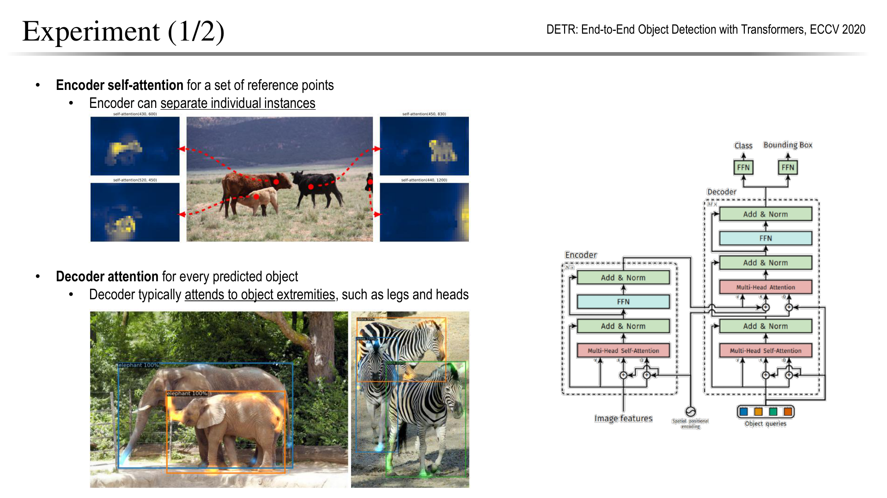
- Encoder의 기준 위치별 Attention은 같은 개체의 다른 부분을 참고하는 모습을,
- Decoder의 물체별 Attention은 머리·다리·경계 같은 위치를 참고하는 모습을 보여줍니다.
- Bounding Box를 그려야 하므로 객체의 끝부분을 Detecting하는 것을 볼 수 있다.
이는 전역 관계를 활용해 물체를 구분하는 동작을 살펴보는 정성 시각화입니다.
Attention이 높다고 그 위치가 인과적으로 유일한 판단 근거인 것은 아닙니다. 이 페이지에는 AP 비교표가 없으므로 시각화로 정량 성능을 대신 판단하지 않습니다.
DETR Experiments (2/2) — Panoptic segmentation으로 확장
자료: PDF 35쪽.

물체별 Decoder 표현과 공간 특징을 이용해 마스크를 생성하고, 개체인 Things와 배경 재질 영역인 Stuff를 하나의 장면 분할로 합칩니다.
아래 그림은 물체 박스만으로는 담기 어려운 도로·벽·동물 윤곽까지 표현합니다.
검출용 기본 DETR이 추가 학습 없이 픽셀 정답을 예측하는 것은 아닙니다.
마스크 Head와 분할 학습 목표를 추가한 확장입니다.
뒤의 Semantic·Instance·Panoptic segmentation 구분과 연결해 이해하면 됩니다.
2. Tracking — 시간에 걸친 물체의 동일성 유지
검출이 프레임 안의 위치를 찾는다면, 추적은 다음 프레임에서도 같은 물체에 같은 ID를 부여합니다.
검출의 성공뿐 아니라 재등장·가림·유사한 외형을 다루는 연결 규칙이 중요합니다.
2.1 추적의 기초와 평가
Tracking challenges — 검출이 맞아도 ID는 바뀔 수 있다
자료: PDF 37쪽.

Tracking의 어려운점.
- 물체가 가려지거나 시야 밖으로 사라졌다 돌아오면 이전 ID를 되찾아야 합니다.
- 비슷한 옷을 입은 사람, 빠른 이동과 Motion blur, 카메라 이동은 위치와 외형 단서를 동시에 바꿉니다.
프레임마다 사람을 모두 찾더라도 두 사람의 ID가 바뀌면 추적 오류입니다.
- 누락, 잘못된 검출, ID switch, 궤적 단절을 분리해 평가해야 합니다.
- 실시간 요구도 응용마다 달라 슬라이드의 30~60 FPS가 모든 시스템의 공통 기준은 아닙니다.
Tracking metrics (1/3) — MOTA와 IDF1
자료: PDF 38쪽.

MOTA는 누락·오검출·ID 교체를 합산합니다.
- 분모는 전체 프레임의 정답 검출 수이며 고유한 사람 수가 아닙니다.
- 오류가 많으면 음수가 될 수 있고, 데이터에 따라 FN이 지표를 크게 좌우합니다.
IDF1은 시퀀스 전체에서 ID를 일관되게 유지한 정도에 초점을 둡니다.
- IDTP·IDFP·IDFN은 궤적 간 전역 ID 대응을 바탕으로 계산하므로, 프레임별 검출 TP·FP·FN을 그대로 대입하는 것은 아닙니다.
IDSW — 같은 실제 물체에 연결된 추적 ID가 바뀌는 오류
- ID Switch는 동일한 정답 물체에 매칭된 예측 Track ID가 이전에 매칭된 ID와 달라지는 사건입니다.
- 물체를 놓치지 않고 박스를 정확히 찾아도, 사람 A에게 붙었던 ID 1이 ID 7로 바뀌면 시간에 걸친 동일성이 깨진 것입니다.
- 여기서 ID는 사람·자동차 같은 클래스가 아니라 개별 대상의 추적 번호입니다.
- 또한 정답 ID와 예측 ID의 숫자가 같을 필요는 없습니다.
- 정답 사람 A가 계속 예측 ID 7에 연결되면 일관된 추적입니다.
| 프레임 | 실제 사람 A에 매칭된 예측 ID | 해석 |
|---|---|---|
| t=1 | ID 1 | 처음 연결: Switch 아님 |
| t=2 | ID 1 | 같은 ID 유지 |
| t=3 | ID 7 | ID 1→7: IDSW 1회 |
| t=4 | ID 7 | 변경된 ID가 유지됨: 새 Switch는 아님 |
| t=5 | ID 1 | ID 7→1: IDSW 추가 1회 |
이 예시의 IDSW는 총 2회입니다.
- 두 사람이 교차한 뒤 A: ID 1→2, B: ID 2→1로 서로 ID를 바꾸면 각 정답 궤적에서 변화가 발생하므로 2회로 셀 수 있습니다.
- 단순히 ‘ID가 잘못 붙어 있던 프레임 수’를 세는 값은 아닙니다.
FN·Fragmentation과의 차이
| 상황 | 주로 발생하는 오류 |
|---|---|
| 물체가 정답에 존재하지만 예측과 매칭되지 않음 | FN — 검출 누락 |
| 추적됨 → 미추적 → 다시 추적됨 | Fragmentation — 궤적 단절 |
| 같은 정답 물체가 이전과 다른 Track ID에 매칭됨 | IDSW — 정체성 연결 변경 |
가림 뒤 같은 ID로 복구되면 누락과 단절은 생겨도 IDSW는 없을 수 있습니다.
반대로 다른 ID로 복구되면 IDSW도 발생할 수 있습니다.
TrackEval의 CLEAR 평가는 바로 직전 프레임뿐 아니라 마지막으로 매칭된 ID를 기억하므로, 중간에 누락 프레임이 있어도 새 ID로 돌아오면 Switch로 집계할 수 있습니다.
정확한 집계는 해당 벤치마크의 평가 규칙을 따릅니다.
MOTA·IDF1에서 어떻게 반영될까?
- MOTA에서는 IDSW 1회가 분자의 오류를 1 늘립니다.
- 예를 들어
- 전체 정답 검출 수가 100이고 FN=10, FP=5, IDSW=2이면
MOTA=1−(10+5+2)/100=0.83입니다. - 다른 값이 같을 때 Switch가 1회 늘면 MOTA는 0.01, 즉 1%p 낮아집니다.
- 전체 정답 검출 수가 100이고 FN=10, FP=5, IDSW=2이면
IDF1은 IDSW 횟수를 수식에 직접 넣지 않고 시퀀스 전체의 ID 대응 아래에서 올바르게 연결된 검출 수로 계산합니다.
따라서 같은 Switch 횟수라도 잘못 연결된 구간의 길이와 궤적 구조에 따라 IDF1이 달라질 수 있습니다. MOTA와 함께 보는 이유입니다.
보충 출처: TrackEval 공식 CLEAR 구현 — IDSW·Fragmentation·MOTA 계산.
Tracking metrics (2/3) — HOTA·DetA·AssA·LocA
자료: PDF 39쪽.

HOTA는 검출과 연결의 균형을 평가합니다. 위치 매칭 기준 α에서의 기본식은 다음과 같습니다.
여러 위치 임계값의 결과를 평균해 HOTA를 구합니다. AssA는 올바르게 매칭된 검출을 기준으로 궤적 연결의 Jaccard 정확도를 평균한 값이고, LocA는 매칭된 검출의 위치 유사도 평균입니다.
슬라이드의 DetA=F1, AssA=단순 정답 개수 비율, LocA=mAP 표기는 정확한 정의가 아닙니다. LocA를 HOTA 식에 별도 세 번째 곱으로 넣지도 않습니다. 위치 품질은 매칭 임계값과 평가 과정에 반영됩니다.
보충 출처: TrackEval 공식 HOTA 구현.
Tracking metrics (3/3) — 한 지표로 순위를 단정하지 않기
자료: PDF 40쪽.

| 지표 | 주로 보는 것 | 함께 확인할 항목 |
|---|---|---|
| MOTA | FN·FP·IDSW의 합산 오류 | 누락 수가 지배하는지 확인 |
| IDF1 | 시퀀스의 ID 일관성 | 검출·좌표 품질을 별도 확인 |
| HOTA | 검출과 연결의 균형 | DetA·AssA를 나눠 원인 분석 |
예를 들어 MOTA가 높아도 ID가 자주 바뀔 수 있고, IDF1이 좋아도 일부 물체를 놓칠 수 있습니다. 슬라이드의 ‘best’는 직관적 강조이며 모든 용도에서 우월한 지표라는 의미는 아닙니다. 동일 데이터·검출 조건·FPS까지 묶어서 비교해야 합니다.
Tracking methodology — 검출 후 연결과 위치 전파
자료: PDF 41쪽.

- Tracking-by-detection은 각 프레임의 검출을 위치·운동·외형 유사도로 연결합니다.
- Tracking-by-regression은 이전 물체의 위치나 특징으로 다음 위치를 직접 갱신합니다.
전자는 누락과 연결 오류, 후자는 누적 Drift가 문제입니다.
이 구분은 객체 검출의 One-stage·Two-stage 구분과 같지 않습니다.
실제 시스템은 검출·회귀·외형 재식별을 섞으므로 슬라이드의 1단계/2단계 표를 엄격한 분류로 받아들이지 않는 것이 좋습니다.
Tracking evolution (1/2) — 운동·외형에서 학습 특징으로 (skip)
자료: PDF 42쪽.

Optical flow는 픽셀 움직임, Mean/CamShift는 특징 분포, Particle filter는 상태의 불확실성을 이용합니다. 이후 온라인 분류기·상관 필터는 대상과 배경을 구분하고, 깊은 특징과 Siamese 구조는 두 영상 영역의 유사도를 학습합니다.
여기에는 단일 대상 추적(SOT)과 다중 물체 추적(MOT)이 함께 등장합니다. 첫 프레임의 대상 하나를 계속 찾는 문제와 새 물체의 등장까지 관리하는 문제를 구분해야 합니다. 연도는 개별 기술의 최초 제안과 적용 시점이 섞인 개요로 읽습니다.
Tracking evolution (2/2) — Association에서 Query 전파로 (skip)
자료: PDF 43쪽.
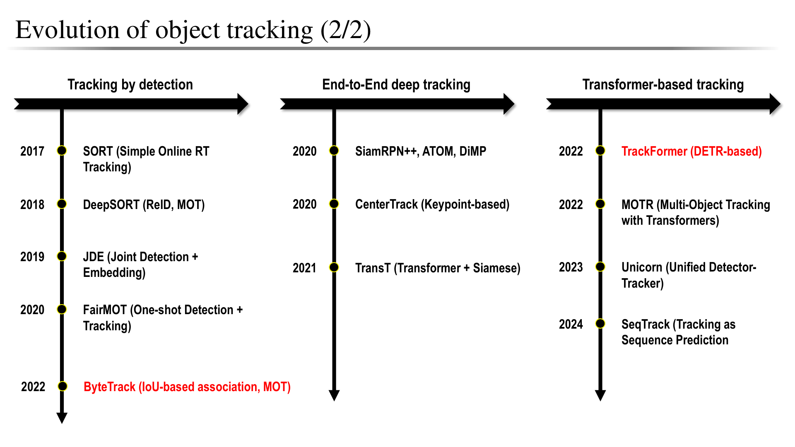
SORT 계열은 검출과 운동 기반 연결, DeepSORT는 외형 재식별, JDE·FairMOT는 검출과 특징 추출의 결합을 강조합니다. ByteTrack은 낮은 점수의 검출을 재활용하고, TrackFormer·MOTR은 Query에 시간 정보를 전달합니다.
학습 기반 연결이 늘어났어도 검출 품질과 Track 생성·종료 규칙은 여전히 중요합니다. 이 노트는 슬라이드의 연도별 순위를 외우기보다 어떤 정보를 다음 프레임으로 전달하는지에 초점을 맞춥니다.
2.2 고전 추적 방법 (skip)
Lucas–Kanade optical flow — 작은 영역의 공통 이동 추정
자료: PDF 44쪽.
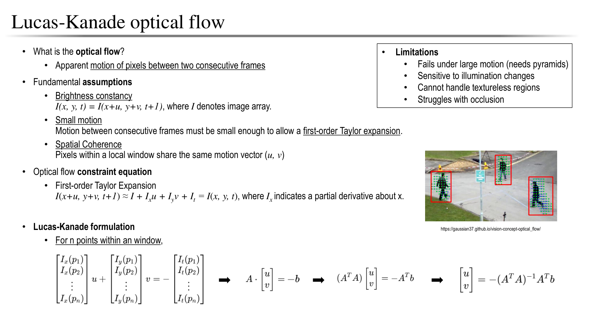
밝기 보존, 작은 이동, 한 윈도우 안의 유사한 움직임을 가정합니다. 밝기 식을 1차 근사하면 한 픽셀에서 다음 제약을 얻습니다.
여러 픽셀의 공간 미분을 A에, 음의 시간 미분을 b에 쌓아 최소제곱으로 이동 (u,v)를 구합니다. 평탄한 영역이나 한 방향 에지만 있으면 해가 불안정할 수 있습니다. 큰 이동은 영상 피라미드로 보완하지만 가림·급격한 조명 변화는 여전히 어렵습니다.
Particle filter — 여러 가능한 상태를 유지하기 (skip)
자료: PDF 45쪽.

대상의 위치·속도 같은 상태를 다수의 입자와 가중치로 근사합니다. 예측 → 관측 적합도 계산 → 가중치 정규화 → 재표본화를 반복해 가능성 높은 상태에 계산을 집중합니다. 그림의 흩어진 점과 굵은 점은 후보 상태와 확률 질량을 나타냅니다.
비선형·다봉 분포를 다루기 편하지만 입자 수와 좋은 관측 모델이 필요합니다. 입자가 부족하면 올바른 상태를 잃을 수 있습니다. Kalman filter의 선형·가우시안 가정을 완화하는 대안이지, 어떤 비선형 문제에서도 항상 우월한 것은 아닙니다.
TLD — 추적·학습·재검출의 순환 (skip)
자료: PDF 46쪽.

Tracker가 짧은 시간의 연속 움직임을 따라가고, Detector가 전체 화면에서 대상을 다시 찾으며, Learner가 새 외형과 오류 사례로 Detector를 갱신합니다. 그림의 세 화살표는 이 기능들이 서로 보완하는 관계입니다.
Local tracking이 실패해도 전역 검출로 복귀할 수 있는 것이 장기 추적의 장점입니다. 반대로 잘못된 영역을 대상이라고 학습하면 Drift가 누적됩니다. 온라인 업데이트가 항상 도움이 되는 것은 아니며, 언제 학습할지 판단하는 장치가 중요합니다.
2.3 ByteTrack
ByteTrack Overview — 낮은 점수의 검출도 시간 단서다
자료: PDF 47쪽.

가려진 사람이나 흐린 물체는 실제로 존재해도 검출 점수가 낮아질 수 있습니다. 이런 박스를 일괄 제거하면 궤적이 끊깁니다.
ByteTrack은 먼저 높은 점수 박스로 연결하고, 남은 Track을 낮은 점수 박스와 한 번 더 연결합니다.
낮은 점수를 모두 믿는 것이 아니라 기존 궤적의 운동·위치 일관성으로 약한 검출을 선별합니다.
이것이 배경 박스를 추가하는 것과 구분되는 핵심입니다.
Key idea — 신뢰할 수 있는 검출부터 연결하고, 남은 Track을 구한다
이미지의 Two-level association은 검출기를 두 번 실행한다는 뜻이 아니라, 한 번 얻은 검출 결과를 점수로 나누어 연결을 두 번 수행한다는 뜻입니다.
여기서 Detection은 현재 프레임의 박스이고, Track은 이전 프레임들에서 유지해 온 대상의 ID·박스·운동 상태입니다.
- 먼저 Kalman filter로 각 Track의 현재 위치를 예측합니다.
- 그다음 예측 박스와 검출 박스의 IoU를 비교하여, 위치가 일관된 쌍을 일대일로 연결합니다.
Confidence는 어떤 단계에서 비교할지를 정하고, IoU는 어떤 Track과 연결할지를 판단하는 단서입니다.
| 단계 | 연결 대상 | 목적 | 남은 결과의 처리 |
|---|---|---|---|
| Stage 1 — High-score association | 기존 Track의 예측 위치 ↔ 높은 점수 검출 | 신뢰할 수 있는 관측으로 ID와 위치를 먼저 갱신 | 남은 Track은 2차 연결 후보, 남은 높은 점수 검출은 신규 Track 후보 |
| Stage 2 — Low-score association | 1차에서 연결되지 않은 적격 Track ↔ 낮은 점수 검출 | 가림·흐림 때문에 약해진 실제 관측을 회복 | 연결된 검출은 기존 ID 유지, 연결되지 않은 낮은 점수 검출은 버림 |
높은 점수와 낮은 점수를 한꺼번에 연결하면 배경의 약한 박스가 좋은 관측과 경쟁할 수 있습니다.
확실한 연결을 먼저 확보한 뒤, 아직 설명되지 않은 Track에만 약한 관측을 적용하는 순서가 중요합니다.
실제 구현은 Active/Lost 상태 등에 따라 2차 연결 대상을 제한합니다.
예시 — 가려진 사람의 ID 7을 유지하기
이전 프레임에서 사람을 ID 7로 추적하고 있다고 가정하겠습니다.
다음 프레임에서는 절반이 가려져 검출 점수가 0.35로 떨어졌습니다.
높은 점수 기준은 0.6이고, 0.35는 낮은 점수 후보로 남길 수 있는 값이라고 하겠습니다.
- 1차 연결: ID 7에 해당하는 높은 점수 검출이 없어 연결되지 않습니다.
- 2차 연결: ID 7의 예측 박스와 점수 0.35 박스의 IoU가 0.8로 높고 연결 기준을 만족하면, 이를 같은 사람의 관측으로 받아들입니다.
- 상태 갱신: 새로운 ID를 만들지 않고 ID 7의 위치와 운동 상태를 갱신합니다.
- 잡음 제외: 점수는 비슷해도 예측 위치와 맞지 않는 배경 박스는 연결하지 않고 버립니다.
수치는 설명용 예시입니다.
낮은 점수 박스가 기존 Track과 맞지 않으면 새 ID를 무조건 만들지 않습니다.
새 Track 생성에는 보통 더 신뢰할 수 있는 높은 점수 검출과 별도 생성 기준을 사용합니다.
그림의 마지막 문장을 어떻게 이해할까?
‘낮은 점수 검출도 시간적 증거’라는 말은 낮은 점수 안에도 진짜 물체가 있으므로 이전 궤적을 이용해 골라낼 수 있다는 뜻입니다.
모든 낮은 점수 검출이 진짜이거나 잡음이 없다는 의미는 아닙니다.
이 방식은 관측이 약해진 구간에서 궤적 단절과 이후 ID Switch를 줄이는 데 도움을 줍니다.
다만 물체가 완전히 가려져 박스 자체가 없거나, 운동 예측이 크게 틀리면 2차 연결만으로 복구할 수 없습니다. 그런 경우는 Lost buffer와 이후의 재연결 정책이 관여합니다.
출처: ByteTrack 원 논문 — §3의 두 단계 Association.
ByteTrack Overall algorithm — 두 번의 Association
자료: PDF 48쪽.

위쪽은 원 검출, 가운데는 높은 점수만 사용했을 때 끊긴 궤적, 아래는 낮은 점수까지 연결해 유지한 궤적입니다.
오른쪽 의사 코드는 검출 분리와 운동 예측, 두 번의 Matching, 신규 Track 생성을 연결합니다.
- BYTE는 Association 방법이고,
- ByteTrack은 검출기와 이를 결합한 시스템입니다.
추적 알고리즘만 같아도 검출기를 바꾸면 성능과 FPS가 달라질 수 있음을 기억해야 합니다.
ByteTrack Algorithm (1/4) — 검출 분리와 운동 예측
자료: PDF 49쪽.

Kalman filter(칼만필터) : 과거의 위치정보를 바탕으로 앞으로의 위치정보를 예측한다.
검출기의 박스를 높은 점수 집합과 낮은 점수 집합으로 나눕니다.
동시에 기존 Track의 상태를 Kalman filter로 현재 프레임까지 예측합니다. 이 예측 박스가 Association의 위치 기준이 됩니다.
높은/낮은 점수를 나누는 임계값과 아예 버릴 최소 점수는 구현에 따라 다를 수 있습니다.
낮은 점수 박스가 곧 새 물체인 것은 아니며, 다음 단계에서 기존 Track과의 연결 근거를 확인합니다.
ByteTrack Algorithm (2/4) — 높은 점수와 1차 연결
자료: PDF 50쪽.
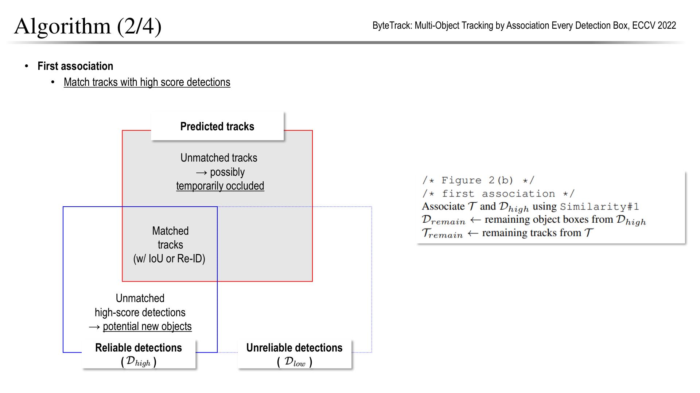
예측 Track과 높은 점수 검출의 IoU 등으로 비용 행렬을 만들고 일대일 Matching을 수행합니다. 잘 연결된 쌍은 Track 상태를 갱신합니다.
남은 Track은 가림·누락일 수 있고, 남은 높은 점수 검출은 신규 대상 후보입니다.
교집합의 Matched tracks — 예측과 현재 관측이 연결된 대상
- 그림의 빨간 영역은 기존 Track의 현재 위치 예측,
- **파란 실선 영역은 현재 프레임의 높은 점수 검출 **\(D_{high}\)입니다.
- 두 영역이 겹친
Matched tracks는 기존 Track과 높은 점수 검출이 같은 대상이라고 판단되어 일대일로 연결된 결과를 나타냅니다.
여기서 교집합은 연결 관계를 설명하는 비유입니다. 화면에서 두 박스가 실제로 겹친 픽셀 영역이나 IoU의 분자 자체를 뜻하지 않습니다.
Track과 Detection은 서로 다른 데이터이므로, 엄밀하게는 두 집합에서 선택한 (Track, Detection) 쌍들의 집합입니다.
| 그림의 영역 | 무엇을 뜻할까? | 다음 처리 |
|---|---|---|
| 빨간 영역과 파란 실선 영역의 교집합 | 높은 점수 검출과 연결된 기존 Track | 기존 ID를 유지하고 관측으로 상태 갱신 |
| 빨간 영역에만 남은 부분 | 높은 점수 검출과 연결되지 않은 Track | 조건에 맞는 Track을 낮은 점수 검출과 2차 연결 |
| 파란 실선 영역에만 남은 부분 | 기존 Track에 연결되지 않은 높은 점수 검출 | 별도 기준을 만족하면 신규 Track 생성 후보 |
연결된 Track에는 무엇이 일어날까?
- ID 유지: 이전에 ID 7이던 Track이 현재 검출과 연결되면 새 ID를 만들지 않고 ID 7을 이어갑니다.
- 상태 보정: Kalman filter의 예측 상태를 검출 박스라는 새 관측으로 보정합니다. 위치·크기와 속도 추정 등이 갱신되며, 단순히 예측 박스를 그대로 사용하는 단계가 아닙니다.
- 중복 연결 방지: 이 Track과 검출은 1차 연결에서 사용되었으므로 다른 대상에 다시 배정하지 않습니다. 2차 연결도 이미 연결된 Track이 아니라 남은 적격 Track을 대상으로 합니다.
예를 들어
- 기존 Track이
{ID 1, ID 2, ID 3}, 높은 점수 검출이{A, B, C}이고ID 1↔B,ID 3↔A가 연결되었다면, Matched tracks는 ID 1·ID 3에 대한 두 연결입니다. - 남은 ID 2는 2차 연결 후보, 남은 검출 C는 신규 대상 후보가 됩니다.
IoU가 높다는 것은 연결의 근거이지 정답 ID임을 보장하는 것은 아닙니다. 가까이 교차하는 대상처럼 애매한 경우에는 1차 Matching도 잘못될 수 있습니다.
또한 그림의 점선 \(D_{low}\)는 다음 단계에서 활용할 낮은 점수 검출이며, 이번 단계의 Matched tracks에 포함시키는 대상은 아닙니다.
그림은 확장 가능한 형태로 Re-ID도 표시하지만, ByteTrack의 대표 구현은 간단한 운동·IoU 기반 연결이 중심입니다. 외형 네트워크를 반드시 추가해야 하는 방식은 아닙니다.
ByteTrack Algorithm (3/4) — 약한 검출로 기존 Track 구하기
자료: PDF 51쪽.
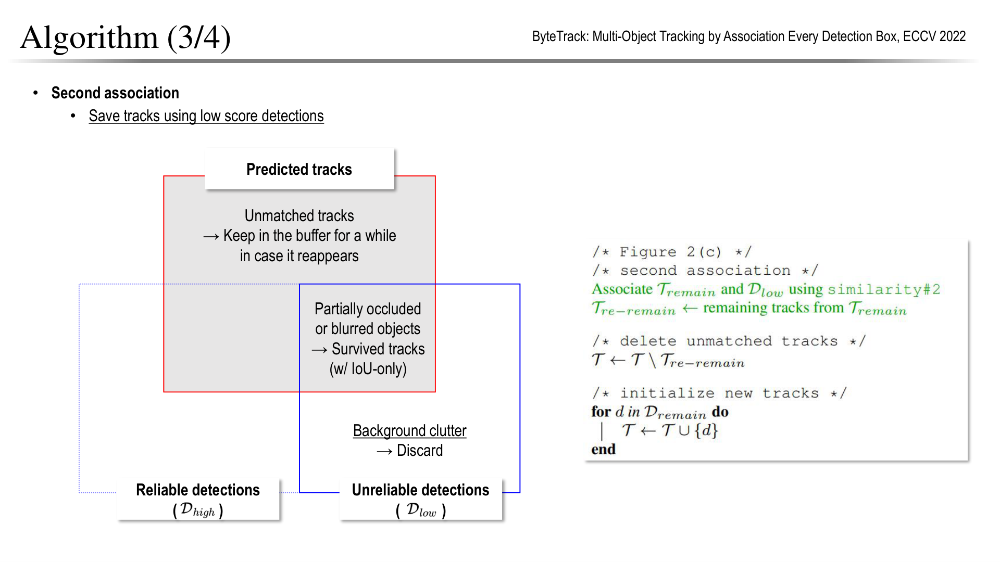
1차 연결에서 남은 Track을 낮은 점수 검출과 IoU 기반으로 다시 연결합니다. 가림 때문에 점수만 낮아진 대상이라면 기존 Track과 위치가 일관되어 살아남을 수 있습니다.
이 단계에 연결되지 않는 낮은 점수 검출은 배경 잡음일 가능성이 높아 버립니다. 연결되지 않은 Track은 일정 기간 Lost 상태로 보관할 수 있습니다.
다만 버퍼 안에 있다는 사실만으로 실제 검출과 동일한 관측 증거가 생기는 것은 아닙니다.
ByteTrack Algorithm (4/4) — 신규·활성·Lost Track 관리
자료: PDF 52쪽.
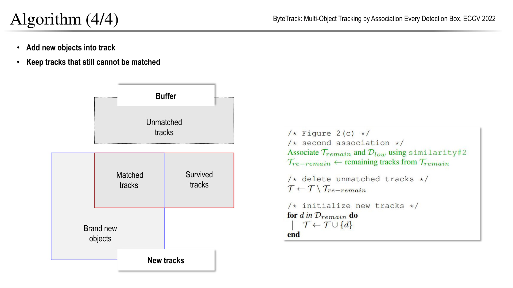
그림의 세 용어는 이번 프레임에서 Track이 유지되거나 새로 생성되는 경로를 구분합니다.
| 용어 | 간략한 의미 | ID 처리 |
|---|---|---|
| Matched tracks | 1차 연결에서 높은 점수 검출과 연결된 기존 Track | 기존 ID 유지, 관측으로 상태 갱신 |
| Survived tracks | 1차에서는 연결되지 않았지만, 2차에서 낮은 점수 검출과 연결되어 살아남은 기존 Track | 기존 ID 유지, 관측으로 상태 갱신 |
| Brand new objects | 기존 Track과 연결되지 않은 높은 점수 검출 중 신규 생성 기준을 만족한 대상 | 새 Track ID 부여 |
- Matched·Survived는 기존 대상의 추적을 이어가는 경우,
- Brand new는 새로운 추적을 시작하는 경우입니다.
- 어느 검출과도 연결되지 않은 Lost Track을 버퍼에 보관하는 것은
Survived tracks와 구분합니다.
남은 높은 점수 검출 중 생성 기준을 만족하는 대상은 새 ID를 받습니다.
기존에 연결된 Track과 2차 연결로 회복한 Track은 유지하고, 오래 찾지 못한 Track은 제거합니다.
낮은 점수 검출은 주로 기존 Track의 회복에 쓰고, 신규 Track은 더 엄격하게 생성하는 비대칭이 중요합니다.
이를 통해 Recall을 높이면서도 배경에서 가짜 ID가 늘어나는 것을 억제합니다.
ByteTrack Experiments — MOTA·IDF1·FPS를 함께 읽기 (skip)
자료: PDF 53쪽.
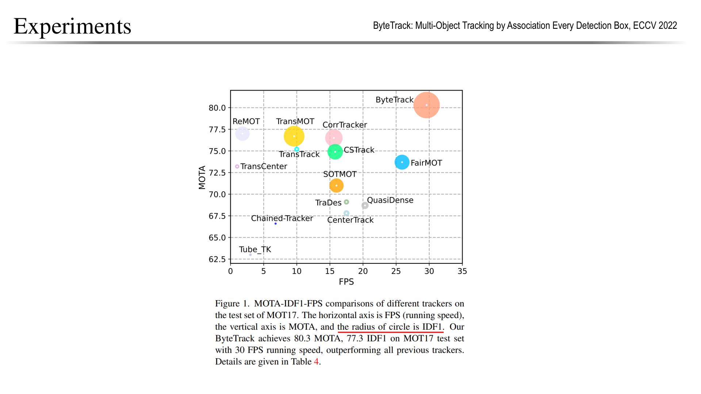
- 가로축은 FPS,
- 세로축은 MOTA,
- 원의 반지름은 IDF1입니다.
오른쪽 위에 큰 원이 있으면 처리 속도·검출 중심 오류·ID 일관성을 함께 만족합니다.
슬라이드의 MOT17 test 결과에서 ByteTrack은 MOTA 80.3, IDF1 77.3, 약 30 FPS입니다.
이는 해당 검출기·장비·평가 설정의 결과이며 모든 입력의 보장 속도가 아닙니다. 다른 방법과 비교할 때 공개/자체 검출, 학습 데이터, 실행 환경을 맞춰야 합니다.
2.4 TrackFormer
TrackFormer Overview — 시간에 따라 Query를 이어 주기
자료: PDF 54쪽.

TrackFormer는 DETR의 물체 집합 예측을 시간축으로 확장합니다.
이전 프레임의 물체 표현을 Track query로 다음 프레임에 전달하고, 새 물체는 Object query로 찾습니다.
Autoregressive는 과거 결과를 다음 단계의 조건으로 사용한다는 뜻입니다.
텍스트를 한 토큰씩 생성하는 모델과 출력 형식이 같은 것은 아닙니다.
별도의 IoU·Re-ID Association 중심 설계 대신 Attention으로 물체의 연속성을 학습합니다.
TrackFormer Architecture (1/2) — 새 물체와 기존 ID
자료: PDF 55쪽.
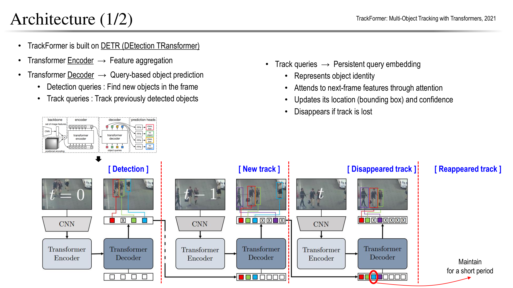
그림 아래의 시간 흐름을 왼쪽에서 오른쪽으로 읽으면 됩니다.
각 프레임은 공통으로 이미지 → CNN → Transformer Encoder → Decoder → 물체별 박스·점수 순서로 처리합니다.
- Detection — 첫 프레임 t=0: Detection query로 물체를 찾습니다. 검출된 빨강·초록·파랑 물체에 ID를 부여하고, 각 물체의 Decoder 출력 표현을 다음 프레임의 Track query로 전달합니다. X로 표시된 출력은 물체 없음입니다.
- New track — 다음 프레임 t=1: 이전 Track query가 기존 물체의 위치를 갱신하며 ID를 이어갑니다. 동시에 Detection query가 새로 등장한 물체를 찾으면, 그림의 보라색처럼 새 ID의 Track을 추가합니다. 갱신된 물체 표현들은 다시 다음 프레임으로 전달합니다.
- Disappeared track — 일부 물체가 보이지 않는 프레임 t: 보이는 물체는 계속 추적하고, 파란 물체처럼 사라진 대상은 즉시 상태를 버리지 않고 짧은 대기 기간 동안 Track query를 유지합니다. 그림 아래 빨간 원은 보관 중인 파란 Query를 강조합니다.
- Reappeared track — 대상 재등장: 대기 기간 안에 대상이 다시 나타나고 보관한 Track query가 이를 찾아내면 기존 ID로 추적을 재개합니다. 끝내 찾지 못하고 대기 기간을 넘으면 해당 Track을 종료합니다.
첫 검출 → 기존 ID 유지·새 Track 추가 → 사라진 Track 잠시 보관 → 재등장 시 기존 ID로 재개 순서입니다.
TrackFormer Architecture (2/2) — DETR에 더해진 입력
자료: PDF 56쪽.
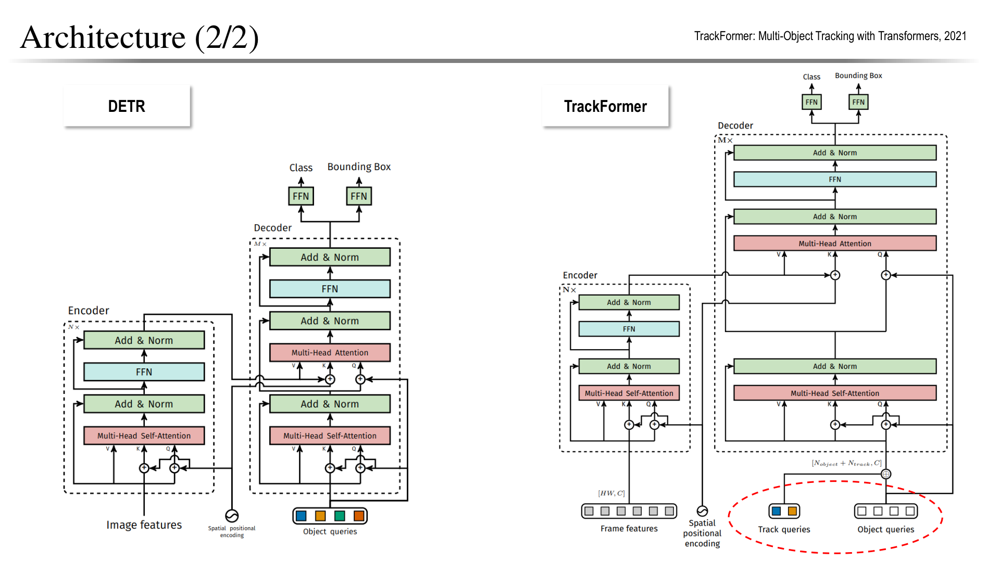
왼쪽 DETR의 Object query만 있는 Decoder와 달리,
오른쪽 TrackFormer는 이전 프레임에서 전달된 Track query도 입력받습니다.
Encoder는 현재 프레임의 특징을 만들고, Decoder는 두 종류 Query를 함께 갱신합니다.
- Self-Attention은 기존·신규 후보 사이 관계를 조정하고,
- Cross-Attention은 현재 이미지에서 각 대상을 찾습니다.
시간 정보는 Query 상태를 통해 전달되므로 모든 과거 영상을 한 번에 다시 넣는 구성과 구분됩니다.
TrackFormer Training (1/3) — ID로 연결하고 새 대상은 Matching
자료: PDF 57쪽.

계속 존재하는 대상은 정답 Track identity를 이용해 이전 Track query와 연결합니다.
- 사라진 대상의 Query는 배경을 예측하도록 하고,
- 새 대상은 남은 Object query와 Hungarian matching합니다.
모든 기존 ID를 프레임마다 자유롭게 재배정하면 시간 일관성을 배우기 어렵습니다.
기존 ID의 연결과 새로운 물체의 최소 비용 Matching을 구분하는 것이 학습의 핵심입니다.
TrackFormer Training (2/3) — Query별 분류·박스 손실
자료: PDF 58쪽.
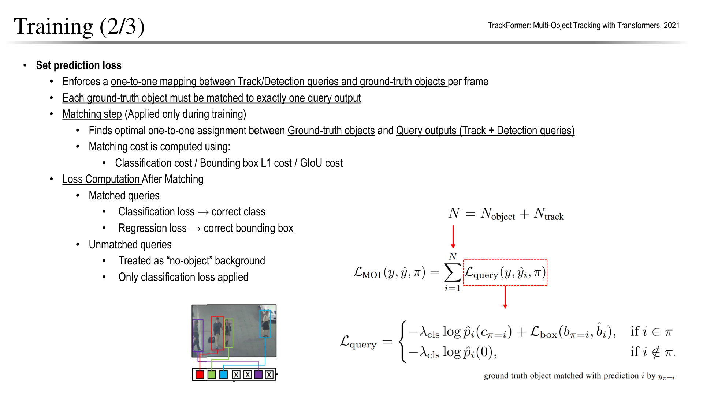
정답과 연결된 Query에는 올바른 클래스와 박스 L1·GIoU 손실을 적용합니다. 연결되지 않은 Query에는 no-object 분류 손실을 적용하고 박스 회귀는 강제하지 않습니다.
집합 예측 손실의 기본 틀은 DETR과 같지만 정답 할당은 Track ID를 반영합니다.
Hungarian matching은 훈련 중 정답과 출력을 연결하는 절차이며, 추론에서 정답 Track을 알고 Matching하는 것은 아닙니다.
TrackFormer Training (3/3) — Track augmentation
자료: PDF 59쪽.

Augmentation이란?
Augmentation(증강)은 기존 학습 자료에 변화를 주어 다양한 상황을 경험하도록 만드는 방법입니다. 일반적인 이미지 증강은 뒤집기·색 변화·Crop 등을 사용합니다.
TrackFormer의 Track augmentation은 프레임의 시간 관계와 다음 Decoder에 넘기는 Track query 집합을 바꿉니다.
학습 중 이전 Track이 항상 정확하게 주어지면, 실제 추론의 누락·가림·잘못된 Track에 대응하기 어렵습니다. 이를 모사하기 위해 다음 세 가지 변화를 줍니다.
| 증강 | 바꾸는 것 | 모사하는 상황 | 학습할 행동 |
|---|---|---|---|
| 프레임 간격 변화 — Range | 이전 프레임을 주변 시간 범위에서 선택 | 큰 위치 변화, 낮은 프레임률, 카메라 이동 | 떨어진 위치에서도 기존 대상을 찾아 연결 |
| False Negative 증강 — FN | 일부 실제 대상의 Track query를 확률적으로 제거 | 이전 단계에서 대상을 놓쳐 추적 상태가 없는 경우 | Object/Detection query로 대상을 다시 검출 |
| False Positive 증강 — FP | 이전 프레임의 배경 출력에서 얻은 Query를 추가 | 잘못된 대상이나 불필요한 Track이 전달된 경우 | 해당 Query를 no-object로 판단해 거부 |
그림의 색상 Query와 두 동그라미의 의미
그림에서 빨강·초록·파랑·보라색은 서로 다른 물체의 Track을 구분합니다. 모두 사람일 수 있으므로, 색마다 서로 다른 의미 클래스가 지정된 것은 아닙니다. 네모 하나는 해당 Query의 출력이고, 네모 안의 X는 no-object로 예측된 출력을 나타냅니다.
두 빨간 동그라미는 다음 프레임에 전달할 Query를 바꾸는 두 증강을 강조합니다.
| 강조된 표시 | 원래 의미 | 증강에서 하는 일 | 다음 프레임의 학습 목표 |
|---|---|---|---|
| X가 있는 네모의 동그라미 | 이전 프레임에서 배경·물체 없음으로 분류된 Query 출력 | 일부러 Track query로 추가 전달 — FP 증강 | 잘못 전달된 Track을 no-object로 거부 |
| 파란 네모의 동그라미 | 실제 파란 대상에 대응하는 Query 출력 | 다음 프레임으로 전달하지 않음 — FN 증강 | 대상은 정답에 남겨 두고 Object query가 다시 검출 |
파란 Query 옆의 빨간 X 화살표는 전달을 차단하는 동작이고, 네모 안의 검은 X는 모델의 no-object 예측입니다. 모양이 비슷해도 역할이 다릅니다. 아래쪽으로 이어지는 화살표는 배경 Query도 다음 Decoder에 넣어 보는 증강 경로입니다.
동그라미는 설명을 위한 강조 표시이며 값 0을 뜻하지 않습니다. no-object는 분류 Head의 추가 범주 \(\varnothing\)로 표현하며, 그 클래스의 정수 인덱스가 반드시 0인 것은 아닙니다. 또한 Query를 제거하는 것은 벡터를 (0,0)으로 바꾸는 것이 아니라, 다음 Decoder에 넘기는 Query 집합에서 제외하는 것입니다.
예시로 보는 세 가지 변화
- 시간 간격 늘리기:
- 바로 전 프레임 대신 몇 프레임 떨어진 영상을 짝으로 사용합니다.
- 같은 사람이 더 멀리 이동한 입력에서도 현재 위치를 찾아야 하므로 작은 이동만 외우는 것을 줄입니다.
- 기존 Query 빼기:
- 빨강·파랑 사람의 Track query가 있을 때 파랑 Query를 제거합니다.
- 현재 프레임의 파랑 사람 정답은 그대로 유지하므로, 남은 Object query가 그 사람을 찾아야 합니다.
- 이미지에서 사람을 지우거나 정답 라벨을 삭제하는 증강이 아닙니다.
- 가짜 Query 넣기:
- 실제 사람의 Track query 외에 배경에서 나온 Query를 추가합니다.
- 모델은 이 Query까지 물체로 계속 유지하지 않고 배경으로 예측하도록 학습합니다.
- 임의의 숫자 벡터를 넣는 것보다 실제 모델이 만들 수 있는 잘못된 추적 상태를 모사합니다.
FN 증강은 ‘놓친 대상을 찾는 연습’, FP 증강은 ‘잘못된 Track을 버리는 연습’입니다.
두 종류 Query를 함께 학습해 기존 대상 추적에만 의존하지 않도록 합니다. 이 변형은 훈련 입력에 적용합니다.
추론할 때도 일부러 올바른 Query를 지우거나 가짜 Query를 넣는다는 뜻은 아닙니다. 학습에서 불완전한 상태를 경험해, 실제 추론의 오류에 더 잘 대응하도록 하는 목적입니다.
출처: TrackFormer 원 논문 §3.3 — Track augmentations.
TrackFormer Inference — Query 유지·생성·종료
자료: PDF 60쪽.

기존 Track query와 새 Object query를 현재 프레임에 적용해 박스·점수를 얻습니다.
- 유지 기준을 만족하면 ID를 이어가고,
- 신규 생성 기준에 맞는 결과에는 새 ID를 부여합니다.
- 잠시 약해진 Track은 Patience window 안에서 복귀를 기다릴 수 있습니다.
외부 Association의 비중을 줄였어도 점수 임계값과 Track 수명 관리가 모두 사라지는 것은 아닙니다.
장시간 화면 밖으로 나갔다 돌아온 대상의 ID 보존은 짧은 가림보다 어렵습니다.
TrackFormer Experiments — MOTA와 IDF1은 같은 순위가 아니다
자료: PDF 61쪽.
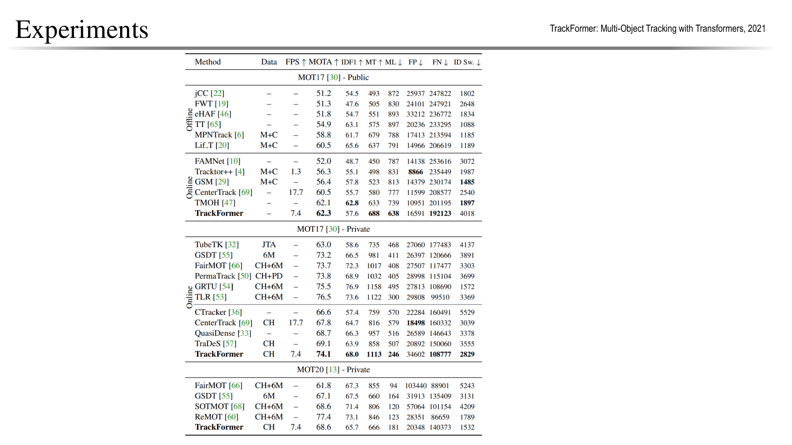
| 슬라이드의 TrackFormer 설정 | MOTA | IDF1 | FPS |
|---|---|---|---|
| MOT17 Public | 62.3 | 57.6 | 7.4 |
| MOT17 Private | 74.1 | 68.0 | 7.4 |
| MOT20 Private | 68.6 | 65.7 | 7.4 |
Public/Private는 검출 입력과 평가 설정이 다르고 학습 자료도 다를 수 있어, 62.3→74.1을 구조 개선량으로 해석하면 안 됩니다.
MOT17 Public에서 TMOH는 MOTA 62.1·IDF1 62.8로, TrackFormer보다 MOTA는 약간 낮지만 IDF1은 높습니다.
Attention 기반 공동 학습의 가능성과 모든 지표의 우승은 다른 주장입니다.
FP·FN·IDSW·FPS를 함께 봐야 하고, ByteTrack의 다른 평가 조건 수치와 직접 순위를 매겨서는 안 됩니다.
2.5 Tracking Summary
검출은 후보를 제공하고, 운동 모델은 다음 위치를 예측하며,
연결은 ID를 유지합니다.
ByteTrack은 약한 검출을 시간적으로 선별하고,
TrackFormer는 Query에 이전 물체 정보를 담아 전달합니다.
두 방식 모두 가림·재등장과 신규/종료 판단을 해결해야 합니다.
성능은 MOTA·IDF1·HOTA와 실행 비용을 함께 확인합니다.
3. Segmentation — 픽셀 단위로 영역 나누기
분할은 위치 박스보다 세밀한 영역을 예측합니다.
픽셀 클래스에서 개체별 마스크, 대화형 Prompt 기반 마스크까지 출력 목표가 확장됩니다.
3.1 분할의 기초와 평가
Segmentation — 위치마다 클래스를 예측하기
자료: PDF 63쪽.

그림은 한 이미지에서 모든 픽셀 위치마다 클래스 점수를 만드는 Dense prediction을 보여줍니다.
Semantic segmentation의 logits는 보통 H×W×C이며, 클래스 방향 Softmax 후 각 위치의 최대 점수 클래스를 선택합니다.
그림 읽기 — 클래스 번호 맵과 One-hot 맵
그림 위쪽의 Semantic Labels는 각 픽셀에 클래스 번호 하나를 기록한 H×W 맵입니다. 예를 들어 1=사람, 2=가방, 3=식물, 4=보도, 5=건물입니다. 이 번호는 범주의 이름을 대신할 뿐, 값이 크다고 가능성이 높다는 뜻은 아닙니다.
아래쪽은 같은 정보를 클래스별 0·1 맵 C개로 나눈 One-hot 표현입니다. 한 클래스의 맵에서는 해당 클래스인 픽셀을 1, 나머지를 0으로 표시합니다. 각 위치가 정확히 한 클래스에 속하는 유효 픽셀이라면, 같은 위치의 C개 값 중 하나만 1입니다.
| 표현 | 크기 예시 — 공간 우선 표기 | 한 픽셀에 담기는 정보 |
|---|---|---|
| 클래스 번호 맵 | H×W |
선택된 클래스 번호 하나 |
| One-hot 맵 | H×W×C |
클래스별 해당 여부 0 또는 1 |
| 모델의 logits | H×W×C |
클래스별 실수 점수 |
| Softmax 확률 맵 | H×W×C |
클래스별 확률, 클래스 방향 합이 1 |
One-hot은 정답이나 확정된 분류 결과를 표현하는 방식입니다. 모델이 처음부터 모든 위치에 0·1만 출력하는 것은 아닙니다. 구현에서는 정답을 One-hot으로 직접 저장하지 않고 클래스 번호 맵으로 Cross-Entropy를 계산할 수도 있습니다.
(0,0)에는 어떤 정보가 있을까?
좌표를 (행, 열)로 쓸 때 (0,0)은 좌측 상단 픽셀입니다. 이 위치가 식물이라고 가정하면, 그림의 클래스 순서에 따른 One-hot 벡터는 (0,0,1,0,0)입니다.
| 클래스 채널 | (0,0) 위치의 One-hot 값 |
의미 |
|---|---|---|
| 사람 | 0 | 이 픽셀은 사람이 아님 |
| 가방 | 0 | 이 픽셀은 가방이 아님 |
| 식물 | 1 | 이 픽셀은 식물에 속함 |
| 보도 | 0 | 이 픽셀은 보도가 아님 |
| 건물 | 0 | 이 픽셀은 건물이 아님 |
따라서 각 클래스 맵의 (0,0)에는 ‘그 픽셀이 해당 클래스인지’에 대한 정보가 담깁니다. (0,0)이 이미지 전체의 클래스 정보를 모으는 특별한 자리는 아니며, 다른 모든 좌표도 같은 방식으로 표현됩니다. 일반적인 CNN 중간 특징의 채널은 이처럼 클래스에 직접 대응한다고 볼 수 없습니다.
예측 흐름 — 점수에서 최종 픽셀 클래스로
모델의 (0,0) 위치 Softmax 확률이 클래스 순서대로 (0.03, 0.02, 0.90, 0.04, 0.01)이라면, 가장 높은 식물을 선택합니다. 최종 클래스 번호 맵에는 3을, 이를 One-hot으로 바꾸면 (0,0,1,0,0)을 기록합니다.
즉, 이미지 → 위치별 클래스 점수(logits) → 클래스 방향 Softmax → 최대 점수 클래스 선택 → 픽셀별 라벨 맵의 흐름입니다. 이 그림은 클래스가 상호 배타적인 Semantic segmentation을 설명하며, 여러 클래스가 동시에 가능한 픽셀별 다중 라벨 문제와는 구분합니다.
분류처럼 이미지 전체를 하나의 벡터로 압축해 끝내지 않고 어느 특징이 어느 위치에서 나왔는지 보존해야 합니다.
이 때문에 다운샘플링으로 넓은 문맥을 얻으면서 업샘플링으로 위치를 복원하는 설계가 중요해집니다.
Why segmentation? — 윤곽과 픽셀 단위 판단
자료: PDF 64쪽.

로봇의 집기, 도로 주행 영역, 표면 균열처럼 박스 내부가 전부 같은 의미가 아닌 작업에는 정확한 영역이 필요합니다.
같은 클래스의 여러 개체를 분리하려면 Semantic segmentation을 넘어 Instance segmentation이 필요합니다.
그림의 의료·도로·제조 예시는 분할의 사용 목적을 보여줍니다.
경계가 중요하다는 이유만으로 모든 분할 모델이 정확한 경계를 보장하는 것은 아닙니다.
작은 결함이나 얇은 구조는 전용 데이터와 해상도·평가가 필요합니다.
Segmentation metrics — IoU·mIoU·FWIoU
자료: PDF 65쪽.

클래스 c의 예측 픽셀 집합을 P, 정답을 G로 놓고 IoU를 계산합니다. 이는 검출 박스의 겹침이 아니라 픽셀 영역의 겹침입니다.
mIoU는 클래스들을 같은 비중으로 보고, FWIoU는 정답 픽셀 빈도가 높은 클래스에 큰 비중을 줍니다.
FWIoU가 희소 클래스 불균형을 자동으로 해결한다는 설명은 부정확합니다.
도로·하늘이 많으면 작은 사람이나 표지판 성능이 가려질 수 있습니다.
Ignore label과 미등장 클래스 처리도 평가 구현을 따라야 합니다.
Classical segmentation — 픽셀 통계와 경계 이용
자료: PDF 66쪽.
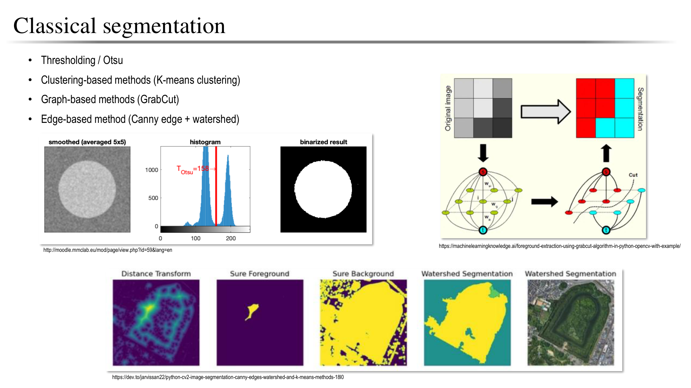
| 방법 | 핵심 단서 | 잘 작동하는 조건과 한계 |
|---|---|---|
| Threshold/Otsu | 밝기 분포 | 전경·배경 밝기가 분리될 때 유리 |
| K-means | 색·특징의 유사성 | 같은 색의 다른 의미를 구분하기 어려움 |
| GrabCut | 전경·배경 모델과 그래프 최적화 | 초기 박스·사용자 입력이 도움 |
| Canny + Watershed | 경계·Marker와 영역 확장 | 경계 잡음·과분할 관리 필요 |
이 방법들은 별도 대규모 라벨 학습 없이 쓸 수 있지만 ‘사람’·‘자동차’ 같은 의미를 자동으로 알지는 못합니다.
단순 배경의 산업 장면에서는 학습 모델보다 적은 비용으로 충분할 수도 있습니다.
Segmentation category — Semantic·Instance·Panoptic
자료: PDF 67쪽.
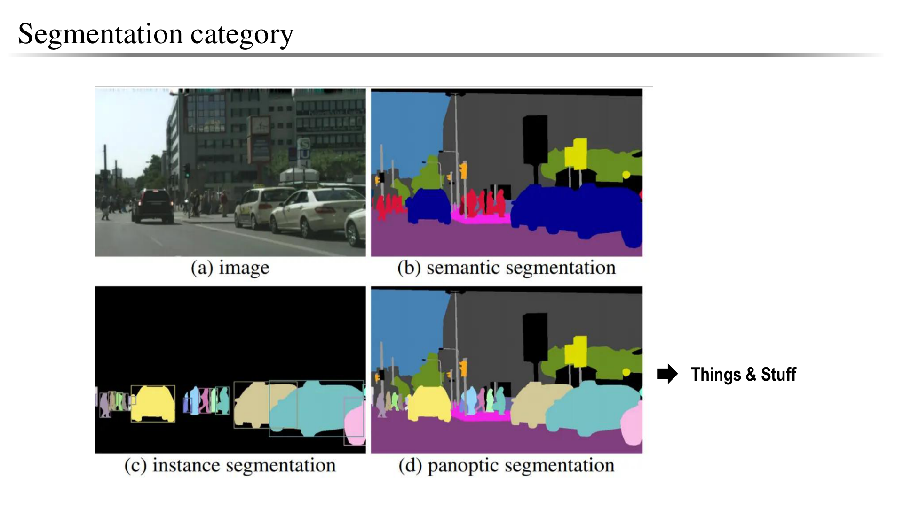
| 구분 | 출력 | 사람 세 명이 있을 때 |
|---|---|---|
| Semantic | 픽셀별 클래스 | 모두 사람 클래스, ID는 구분하지 않음 |
| Instance | 개별 물체별 마스크 | 사람 1·2·3을 각각 분리 |
| Panoptic | 모든 픽셀의 의미와 개체 ID | 사람들을 구분하고 도로·하늘도 포함 |
Things는 셀 수 있는 개체, Stuff는 도로·잔디 같은 배경 영역입니다.
같은 클래스끼리 분리하고 싶은지, 장면의 배경까지 모두 설명할지에 따라 필요한 정답 주석과 모델 출력이 달라집니다.
3.2 FCN (SKIP)
FCN Overview — 분류 CNN을 공간 예측기로 바꾸기
자료: PDF 68쪽.
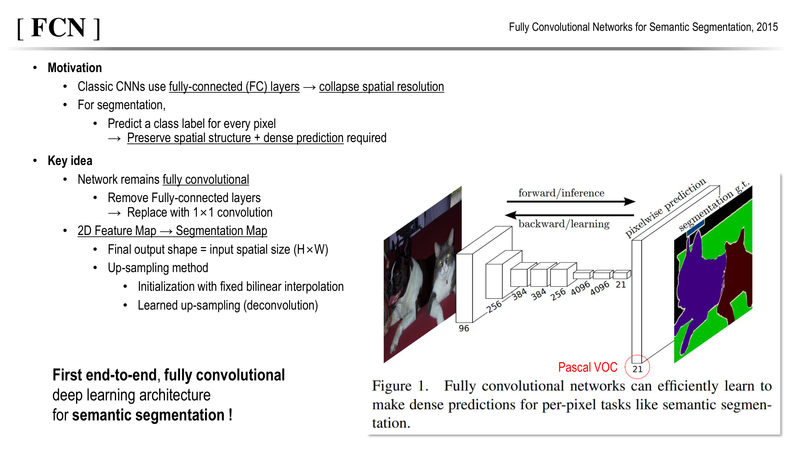
FCN은 분류 CNN의 Fully connected 계산을 Convolution으로 바꾸어 위치별 클래스 점수 맵을 만듭니다.
낮은 해상도의 점수 맵을 업샘플링해 원본 좌표계의 예측으로 맞춥니다.
학습 가능한 업샘플링과 Skip fusion을 포함한 End-to-end 의미 분할의 대표적인 초기 접근입니다.
‘모든 FC를 단순히 1×1로 바꾼다’는 요약보다 기존 FC가 보던 공간 범위를 유지하는 Conv 변환으로 이해하는 것이 정확합니다.
업샘플링만으로 사라진 세부 정보가 모두 복구되지는 않습니다.
FCN Skip fusion — 깊은 의미와 얕은 위치 결합
자료: PDF 69쪽.

FCN-32s는 가장 깊고 거친 점수 맵을, FCN-16s는 Pool4 정보를, FCN-8s는 Pool3 정보까지 사용합니다.
깊은 특징은 무엇인지, 얕은 특징은 어디인지에 도움을 주므로 결합 후 윤곽이 세밀해질 수 있습니다.
32·16·8은 입력에 대한 예측 격자의 Stride를 나타내며 클래스 수나 업샘플링 층 수가 아닙니다.
원 FCN의 점수 맵 합산과 뒤의 U-Net의 특징 Concatenation은 다른 Skip 결합 방식입니다.
FCN Training — 픽셀별 Softmax Cross-Entropy
자료: PDF 70쪽.
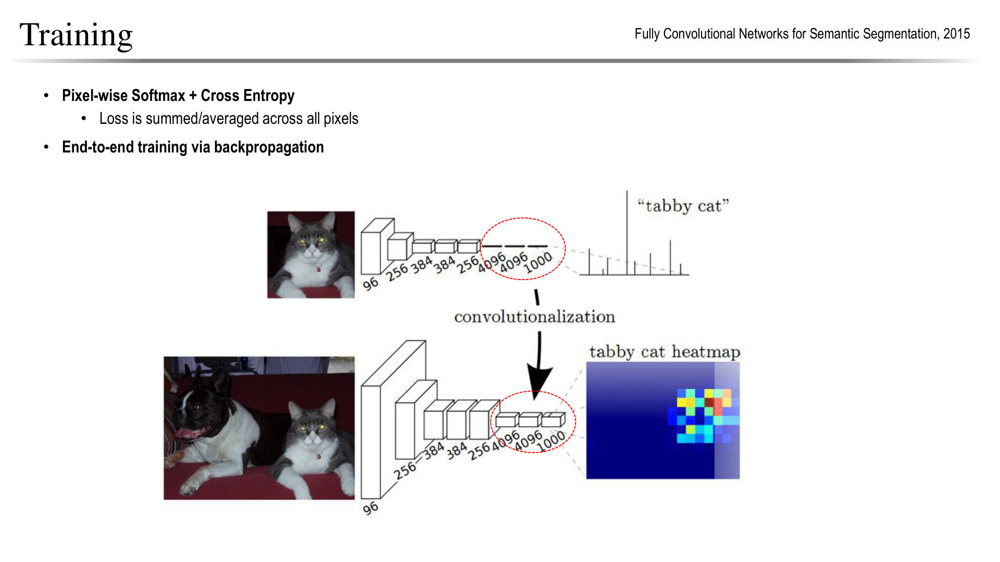
각 유효 픽셀 x의 정답 클래스 y(x)에 대해 음의 로그 확률을 평균합니다.
Ω는 Ignore 영역을 제외한 위치 집합입니다.
그림의 고양이 분류 점수 하나가 공간 Heatmap으로 바뀌는 것이 핵심입니다.
클래스 불균형이나 경계 품질은 기본 픽셀 손실만으로 충분하지 않을 수 있어 가중치·샘플링·다른 손실을 추가하기도 합니다.
FCN Summary — 분할의 기본 틀과 한계
자료: PDF 71쪽.
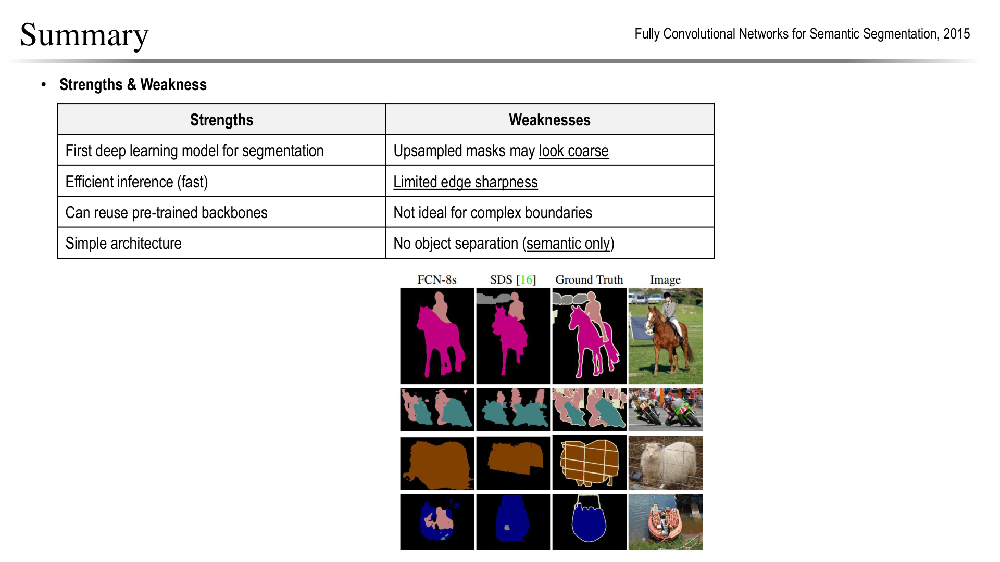
FCN은 사전학습 Backbone을 재사용하고 전체 이미지를 한 번에 처리하는 학습 가능한 Dense predictor를 제시했습니다.
Skip fusion으로 단순 업샘플링보다 세부 위치를 보완할 수 있습니다.
그림의 출력은 정답 경계보다 거칠거나 얇은 영역을 잃을 수 있습니다.
기본 Semantic FCN은 사람 두 명을 같은 클래스 하나로 표현하므로 같은 종류의 개체를 분리하는 기능이 별도로 필요합니다.
다음 Mask R-CNN은 RoI별 마스크로 이 문제에 접근합니다.
3.3 Mask R-CNN
Mask R-CNN Motivation — 박스마다 마스크 예측하기
자료: PDF 72쪽.

Faster R-CNN은 개체를 박스로 구분하지만 픽셀 윤곽은 없습니다.
Semantic FCN은 픽셀 클래스를 알지만 같은 클래스의 개체 ID를 나누지 않습니다.
Mask R-CNN은 검출한 개체마다 마스크를 예측해 두 기능을 결합합니다.
그림의 Separate는 ‘어느 개체인가를 구분’, **Segment는 ‘그 개체가 차지하는 픽셀 영역을 예측’**한다는 뜻입니다.
| 기능 | 제공하는 정보 | 한계 |
|---|---|---|
| Object detection의 Separate | 물체마다 별도 박스와 클래스를 예측해 개체 구분 | 박스 안의 정확한 윤곽은 모름 |
| Semantic segmentation의 Segment | 각 픽셀이 어떤 클래스에 속하는지 예측 | 같은 클래스의 여러 개체는 구분하지 않음 |
| Instance segmentation | 개체 구분 + 개체별 픽셀 마스크 | 두 기능을 함께 수행해야 함 |
예를 들어
- 컵 두 개가 있으면, 검출은 컵 A·B를 서로 다른 박스로 찾고 Semantic segmentation은 둘의 픽셀을 모두 컵 클래스로 표시합니다.
- Mask R-CNN은 각 후보 영역(RoI)의 특징에서 컵 A의 마스크와 컵 B의 마스크를 따로 예측하므로 같은 클래스도 개체별로 나눌 수 있습니다.
즉, 물체별 영역을 찾고 → 각 영역의 픽셀 마스크를 예측하는 원리입니다.
완성된 검출 결과와 Semantic segmentation 결과를 단순히 겹치는 것이 아니라, 공유 특징 위에서 검출 Head와 Mask head를 함께 학습합니다.
박스가 겹쳐도 마스크가 개체별로 분리될 수 있습니다.
다만 심한 가림이나 잘못된 검출이 마스크 오류로 이어질 수 있어 검출과 분할 품질을 모두 평가해야 합니다.
Mask R-CNN Overview — 병렬 Mask branch
자료: PDF 73쪽.

공유 Backbone과 RPN으로 후보 영역을 얻고, RoI 특징에서 클래스·박스와 마스크를 병렬로 예측합니다.
그림 오른쪽의 작은 FCN이 후보 영역 내부의 공간 구조를 보존하며 픽셀 예측을 수행합니다.
마스크가 최종 분류 결과를 픽셀마다 다시 다중 분류하는 것이 아니라, 개체의 클래스 결정과 영역 모양 예측을 분리한다는 점이 중요합니다.
학습은 분류·박스·마스크 손실을 함께 사용합니다.
Mask R-CNN Architecture — Backbone·RPN·RoIAlign·Heads
자료: PDF 74쪽.

| 구성 | 역할 |
|---|---|
| Backbone/FPN | 여러 크기의 물체를 위한 특징 추출 |
| RPN | 물체 후보 영역 생성 |
| RoIAlign | 후보 영역의 고정 크기 특징을 위치 정렬을 유지하며 추출 |
| Class·Box heads | 종류와 좌표 예측 |
| Mask head | 클래스별 이진 마스크 생성 |
전체 손실은 Lcls + Lbox + Lmask입니다.
FPN은 널리 쓰이는 구성이지만 Mask R-CNN의 아이디어를 특정 Backbone 하나로 한정하는 것은 아닙니다.
뒤에서 RoIAlign과 이진 Mask head의 효과를 따로 확인합니다.
RoI Align (1/2) — RoI Pooling의 좌표 반올림
자료: PDF 75쪽.
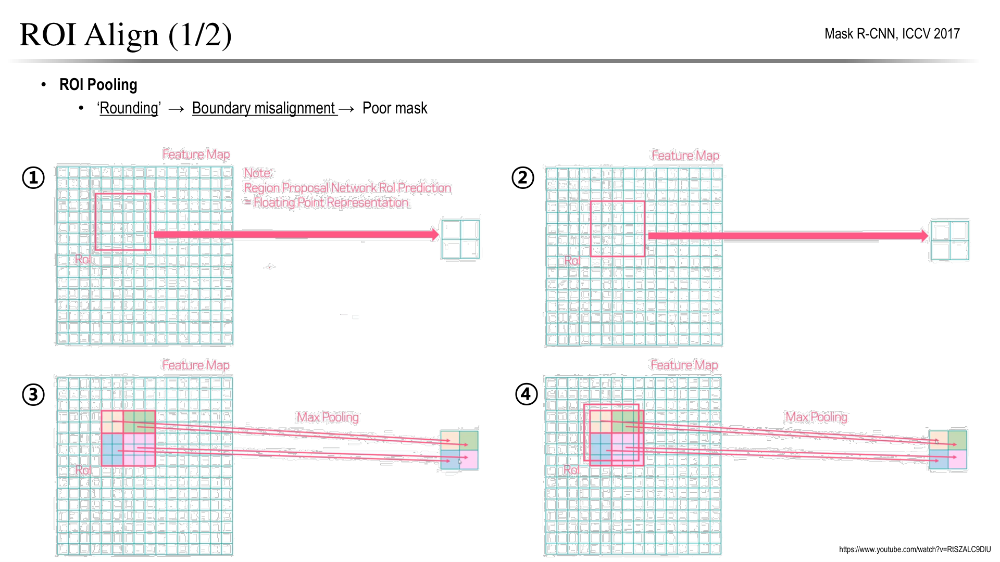
Mask R-CNN에서 인지한 문제는 **RoI Pooling의 좌표 양자화 때문에 원래 물체와 추출한 특징의 위치가 어긋나는 것(Misalignment)**입니다.
RoI 크기를 고정된 출력 크기로 바꾸는 과정에서 소수 좌표를 정수 격자에 맞추며 위치 정보가 손실됩니다.
오차는 어디에서 생길까?
| 단계 | RoI Pooling의 처리 | 발생할 수 있는 문제 |
|---|---|---|
| 1. RoI를 특징 맵으로 변환 | 원본 박스 좌표를 Stride로 나눈 뒤 경계를 정수화 | 물체의 실제 경계와 사용할 특징 영역이 달라짐 |
| 2. RoI를 Bin으로 분할 | 고정 크기 출력을 위해 나눈 각 Bin 경계도 정수화 | 서로 다른 위치의 특징이 같은 Bin에 포함되거나 제외됨 |
| 3. Bin별 Pooling | 선택된 격자 값의 최댓값 등을 집계 | 앞에서 잃은 소수 위치 정보를 복구하지 못함 |
예를 들어
- 특징 맵 좌표에서 RoI 경계가
2.4~7.8이면, 구현의 반올림·내림·올림 규칙에 따라 정수 격자로 바뀝니다. - 그 결과 원래 의도한 영역과 다른 위치의 특징을 읽을 수 있습니다. 두 차례의 양자화가 공간 정렬을 깨뜨리는 것이 핵심입니다.
왜 마스크 예측에서 더 문제가 될까?
분류는 ‘컵인가?’를 판단하므로 작은 위치 변화에도 같은 답을 낼 수 있지만, 분할은 **‘어느 픽셀까지 컵인가?’**를 맞혀야 합니다.
경계가 어긋난 특징으로 마스크를 만들면 윤곽이 밀리거나 얇은 부위가 사라질 수 있습니다.
특징 맵 Stride가 16이라면 특징 맵의 1칸 이동은 원본 좌표에서 16픽셀 이동에 해당합니다.
실제 양자화 오차가 항상 1칸이라는 뜻은 아니지만, 거친 특징 맵에서 작은 좌표 오차도 원본에서는 커질 수 있음을 보여줍니다.
이를 개선하기 위해 RoIAlign은 RoI·Bin 경계를 연속 좌표로 유지하고, 필요한 위치의 특징을 Bilinear interpolation으로 읽습니다. 다음 항목에서 그 동작을 살펴봅니다.
RoI Align (2/2) — Bilinear interpolation으로 정렬 유지
자료: PDF 76쪽.

RoIAlign은 좌표 양자화를 피하고, 소수 좌표의 특징값을 Bilinear interpolation으로 읽어 공간 정렬을 유지합니다.
RoI Pooling과 마찬가지로 고정 크기 특징을 만들지만, 값을 읽는 위치를 더 정확하게 처리합니다.
어떻게 해결했을까?
- RoI 경계를 연속 좌표로 유지: 특징 맵으로 옮긴 RoI 경계가
2.4~7.8이면 정수로 반올림하지 않고 그대로 사용합니다. - Bin 경계도 정수화하지 않음: RoI를 필요한 출력 크기의 격자로 나누되, 내부 경계의 소수 위치를 유지합니다.
- 샘플 위치에서 보간: 각 Bin 안의 정해진 샘플 위치마다 주변 네 격자 값을 거리 비율로 가중합합니다.
- 고정 크기 특징 생성: Bin 안의 샘플 값을 Max 또는 Average 등으로 집계해 출력합니다.
샘플이 네 격자 사이 정중앙이면 각각의 가중치가 1/4입니다. 네 값이 2, 4, 6, 8이면 보간값은 (2+4+6+8)/4=5입니다. 한쪽에 가까워지면 그쪽 격자 값의 비중이 커집니다.
따라서 소수 좌표를 버리는 대신 그 위치의 값을 계산해서 읽는 것이 핵심입니다. 학습으로 새로운 샘플 좌표를 찾아내는 연산은 아니며, Backbone 특징의 위치 대응을 보존합니다.
어떤 분야에서 의의가 있을까?
| 분야 | 위치 정렬이 중요한 이유 | RoIAlign의 기여 |
|---|---|---|
| Instance segmentation | 개체의 윤곽과 얇은 부위를 픽셀 단위로 구분해야 함 | RoI 특징과 실제 물체의 위치 차이를 줄여 정밀한 마스크 예측 지원 |
| 정밀 객체 검출 | 박스의 작은 좌표 차이가 높은 IoU 기준에서 오류가 됨 | 잘 정렬된 특징으로 박스 좌표 보정에 도움 |
| 인체 Keypoint 검출 | 손목·발목 등 관절 위치를 정확히 찾아야 함 | 사람 RoI 안에서 위치별 특징을 정밀하게 추출 |
Mask R-CNN에서의 핵심 의의는 영역의 종류를 분류하기 위한 특징 추출을, 픽셀·관절 위치를 예측하는 공간 정렬된 특징 추출로 발전시켰다는 점입니다.
다만 보간은 다운샘플링으로 사라진 세부 정보를 모두 되살리는 것은 아니므로, 작은 대상의 해상도 한계까지 해결하지는 않습니다.
Mask head — 클래스별 독립 이진 분할
자료: PDF 77쪽.

K개 클래스에 대해 K×m×m 마스크 logits를 출력하고, 각 픽셀에 Sigmoid를 적용합니다.
학습 시 정답 클래스 k의 채널에만 Binary Cross-Entropy를 적용합니다.
추론에서는 분류 Head가 고른 클래스의 마스크를 사용합니다.
이는 클래스 방향 Softmax로 픽셀마다 경쟁시키는 방식과 다릅니다.
어떤 클래스인지는 분류 Head가, 그 개체의 어느 픽셀인지는 Mask head가 담당해 두 작업의 간섭을 줄입니다.
작업별로 다른 층을 사용하는 이유
Mask R-CNN은 공통 특징을 추출한 뒤, 작업에 맞는 Head로 분기합니다. 아래는 대표적인 FPN 구성의 흐름을 설명하기 위해 생성한 개념도입니다.

| 작업 | 사용하는 대표 층 | 필요한 정보와 역할 |
|---|---|---|
| 클래스 분류 | 공유 FC 층 → 분류 출력층 → Softmax | RoI 전체 정보를 종합해 물체 종류 결정 |
| 박스 회귀 | 공유 FC 층 → 좌표 출력층 | RoI 전체 정보를 종합해 박스 좌표 보정 |
| 마스크 예측 | Conv 층 → 업샘플링 → 클래스별 Sigmoid | 공간 배치를 유지하며 각 픽셀의 물체 포함 여부 예측 |
분류·박스 회귀는 앞부분의 FC 층을 공유하고 마지막 출력층을 나눕니다. Mask head는 별도 작은 FCN으로 구성해 위치별 특징을 처리합니다. 예를 들어 손잡이·다리 같은 얇은 부위를 그리려면 ‘그 특징이 있는가’뿐 아니라 ‘어디에 있는가’를 유지해야 하므로 Conv 층이 적합합니다. 세부 층 구성은 Backbone과 구현에 따라 달라질 수 있습니다.
그림은 위에서 아래로 다음 순서로 읽습니다.
- 공통 특징 추출: Backbone/FPN에서 특징 맵을 만들고, 후보 RoI를 RoIAlign으로 처리합니다. 후보를 만드는 RPN은 이 개념도에서 생략했습니다.
- 병렬 예측: 분류·박스 Head와 Mask head가 각자의 출력을 계산합니다. 마스크를 만들기 위해 분류 결과가 나올 때까지 기다리는 직렬 구조는 아닙니다.
- 마스크 채널 선택: 분류 Head가 고른 클래스에 해당하는 마스크 채널을 선택합니다. 채널을 고르는 기준은 클래스이며, 박스 회귀값은 아닙니다.
- 최종 결과 구성: 선택한 마스크를 예측 박스의 위치·크기에 맞춰 이미지 좌표계로 배치하고 클래스·박스와 함께 출력합니다.
학습에서도 역할을 나눕니다. 분류는 클래스 손실, 박스는 좌표 손실, 마스크는 정답 클래스 채널의 픽셀별 Binary Cross-Entropy를 사용하고, 이 손실들을 함께 최적화합니다. 공통 Backbone은 여러 작업의 학습 신호를 함께 받습니다.
Mask R-CNN Experiments (1/3) — Sigmoid와 FCN
자료: PDF 78쪽.
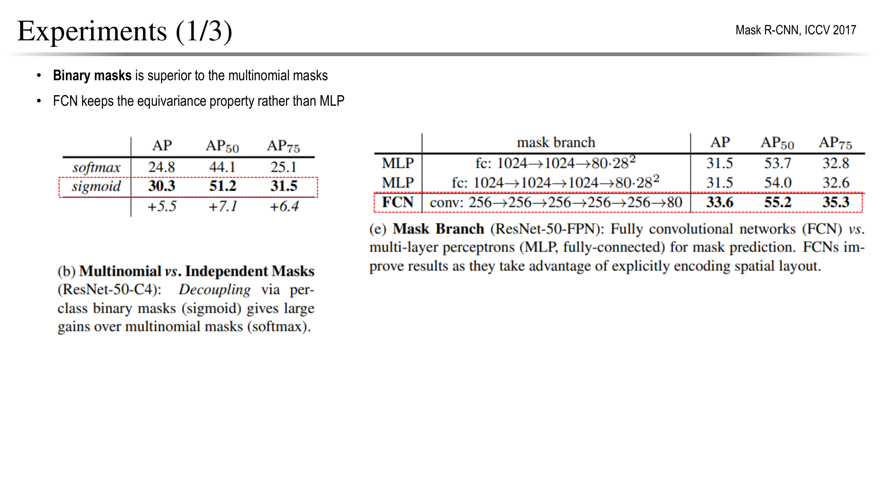
| 마스크 출력 방식 | AP | AP50 | AP75 |
|---|---|---|---|
| Softmax | 24.8 | 44.1 | 25.1 |
| 클래스별 Sigmoid | 30.3 | 51.2 | 31.5 |
슬라이드 조건에서 Sigmoid는 AP를 +5.5포인트 개선합니다.
이는 분류와 마스크 예측을 분리하는 설계의 근거입니다.
오른쪽 비교에서도 FCN Mask branch의 AP 33.6은 MLP의 31.5보다 높아, 공간 구조를 유지하는 예측이 유리함을 보여줍니다.
두 표는 Backbone·Head 구성이 같지 않은 별도 비교이므로 왼쪽 30.3과 오른쪽 33.6을 한 요소만 바꾼 차이로 해석하지 않습니다.
Mask R-CNN Experiments (2/3) — RoIAlign의 정렬 효과
자료: PDF 79쪽.

왼쪽 C4 구성에서 RoIPool의 AP 26.9가 RoIAlign에서 30.3으로, AP75는 26.4에서 31.8로 향상됩니다.
- Pool의 Max/Average만 바꾼 RoIWarp 결과는 이 격차를 설명하지 못합니다.
오른쪽 Stride 32 특징에서는 마스크 AP가 23.6→30.9(+7.3), 박스 AP가 **28.2→34.0(+5.8)**입니다.
- 거친 격자일수록 위치 오차가 크므로 정렬의 효과가 더 크게 나타납니다.
서로 다른 Backbone/Stride 표의 절대 값을 섞지 않아야 합니다.
Mask R-CNN Experiments (3/3) — 개체별 윤곽 사례
자료: PDF 80쪽.

색이 다른 마스크는 개별 개체의 영역입니다.
사람·차량·동물·물건이 겹친 장면에서 박스와 윤곽을 동시에 보여줍니다.
같은 클래스라도 다른 ID의 영역이 나뉘는지, 가려진 경계나 얇은 부분을 얼마나 보존하는지 살펴봅니다.
정성 그림은 동작 예시이며 AP 계산을 대체하지 않습니다.
그림의 색이 의미 클래스와 항상 일대일 대응하는 것도 아닙니다. 학습한 클래스 밖의 모든 물체를 자동으로 분할한다는 주장과도 구분합니다.
3.4 U-Net
U-Net Architecture — 문맥과 위치를 U자 경로로 결합
자료: PDF 81쪽.
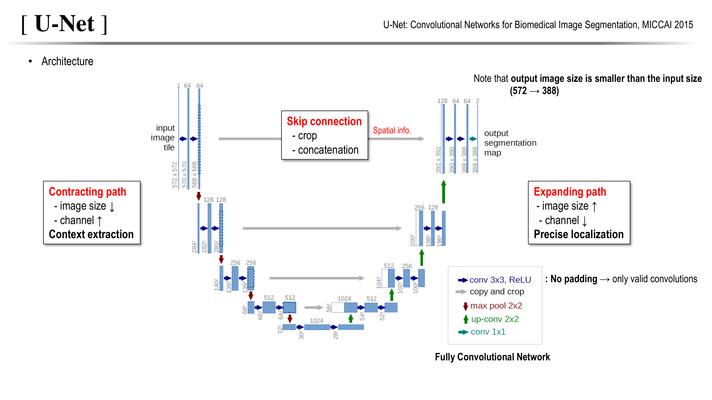
그림은 왼쪽 위 입력 → 왼쪽 아래로 축소 → 바닥에서 문맥 처리 → 오른쪽 위로 확대 → 픽셀별 분류 출력 순서로 읽습니다. 아래 크기는 높이×너비×채널(H×W×C) 순서이며, 배치 차원은 생략합니다. 그림의 파란 상자 위 숫자는 채널 수, 옆 숫자는 공간 크기입니다.
1. 입력 572×572×1 — 왜 채널이 1개일까?

이 구조도는 흑백 영상 입력의 예시이므로 픽셀마다 밝기 값 하나를 사용해 입력 채널이 1입니다. RGB 컬러 영상이라면 첫 층의 입력 채널을 3으로 바꾸어 사용할 수 있습니다. U-Net이 반드시 흑백만 처리해야 하는 것은 아닙니다.
572×572는 이 그림에서 사용하는 입력 타일 크기입니다. 원 U-Net은 Padding 없는 합성곱 때문에 출력이 작아지므로, 최종 예측 영역보다 넓은 주변 문맥을 입력으로 제공합니다.
2. 첫 합성곱 570×570×64 — 공간 크기와 채널은 다른 이유로 바뀐다
첫 파란 화살표는 3×3 Convolution, Stride 1, Padding 0과 ReLU입니다. 공간 출력 크기는 다음 식으로 결정됩니다. 여기서는 Dilation 1을 사용합니다.
3×3 필터가 입력 밖으로 나가지 않고 이동할 수 있는 위치만 계산하므로 가로·세로가 각각 2씩 줄어듭니다. ReLU는 크기를 줄이지 않으며, 572→570은 합성곱의 결과입니다.
채널은 출력 필터를 64개 사용하도록 설계했기 때문에 1→64가 됩니다. 필터 하나가 입력의 모든 채널을 보고 특징 맵 하나를 만듭니다. 첫 층의 필터 하나는 3×3×1이며, 이를 64개 사용해 64개 특징 맵을 얻습니다. RGB 입력이면 필터 하나의 깊이가 3×3×3으로 달라져도 출력 필터가 64개라면 출력 채널은 64입니다.
64는 클래스 수나 수식으로 자동 결정된 값이 아니라 모델 폭을 정하는 설계값입니다. 필터의 개수는 설계하고, 각 필터의 가중치는 학습합니다. 서로 다른 공간·질감 특징을 표현할 수 있지만 필터마다 역할을 사람이 지정하는 것은 아닙니다.
두 번째 3×3 합성곱은 570×570×64 → 568×568×64입니다. 이번에는 필터 하나가 64개 입력 채널을 모두 보므로 크기가 3×3×64이고, 출력 필터 수를 다시 64개로 정해 채널은 유지됩니다.
3. Contracting path — 공간은 줄이고 특징의 폭은 늘리기
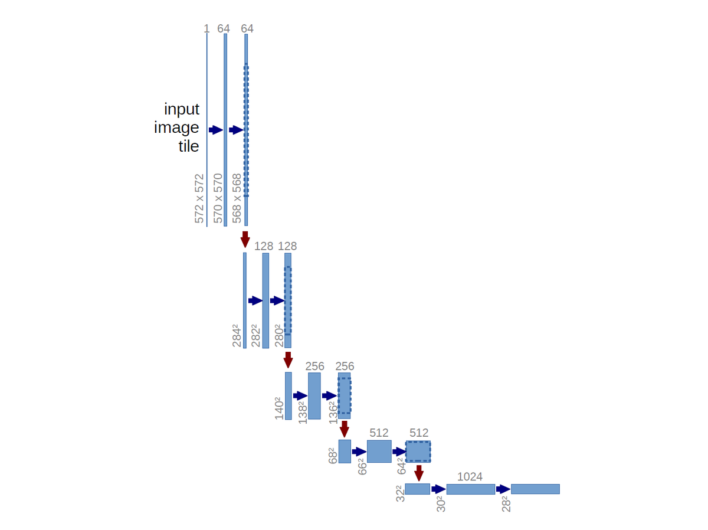
빨간 아래 화살표는 2×2 Max Pooling, Stride 2입니다. 가로·세로를 절반으로 줄이지만 채널 수는 바꾸지 않습니다. 그다음 합성곱에서 출력 필터 수를 늘립니다.
| 위치 | 순서대로 변하는 크기 | 변화 이유 |
|---|---|---|
| 첫 블록 | 572×572×1 → 570×570×64 → 568×568×64 |
Valid Conv 두 번, 출력 필터 64개 |
| 두 번째 블록 | Pool 284×284×64 → Conv 282×282×128 → Conv 280×280×128 |
Pool로 반 크기, Conv에서 채널 128로 확대 |
| 세 번째 블록 | Pool 140×140×128 → Conv 138×138×256 → Conv 136×136×256 |
같은 규칙 반복 |
| 네 번째 블록 | Pool 68×68×256 → Conv 66×66×512 → Conv 64×64×512 |
같은 규칙 반복 |
| 바닥 블록 | Pool 32×32×512 → Conv 30×30×1024 → Conv 28×28×1024 |
가장 낮은 해상도에서 문맥 처리 |
깊어질수록 각 특징이 참조하는 입력 범위가 넓어져 큰 구조와 문맥을 다룰 수 있습니다. 동시에 채널을 64→128→256→512→1024로 늘려 다양한 특징을 표현합니다. Pooling 자체가 채널을 두 배로 만드는 것은 아닙니다.
4. Expanding path — 확대하고 Skip 특징을 결합하기

초록 위 화살표의 2×2 Up-convolution은 이 구조에서 가로·세로를 2배로 늘리고 채널을 절반으로 줄이도록 설계되어 있습니다. 이후 왼쪽 경로에서 복사해 온 특징을 Crop한 뒤 채널 방향으로 Concatenate하고, 3×3 Valid Conv를 두 번 적용합니다.
| 오른쪽 블록 | Up-convolution 출력 | Crop한 왼쪽 특징과 결합 | 3×3 Conv 두 번의 출력 |
|---|---|---|---|
| 첫 확대 | 56×56×512 |
56×56×512와 Concat → 56×56×1024 |
54×54×512 → 52×52×512 |
| 두 번째 확대 | 104×104×256 |
104×104×256과 Concat → 104×104×512 |
102×102×256 → 100×100×256 |
| 세 번째 확대 | 200×200×128 |
200×200×128과 Concat → 200×200×256 |
198×198×128 → 196×196×128 |
| 네 번째 확대 | 392×392×64 |
392×392×64와 Concat → 392×392×128 |
390×390×64 → 388×388×64 |
예를 들어 첫 확대에서 28×28×1024 → 56×56×512가 되고, 왼쪽 특징 512채널을 이어 붙이면 1024채널이 됩니다. Concatenation은 특징값을 더하는 연산이 아니라 채널을 이어 붙이는 연산입니다. 이후 합성곱이 두 경로의 정보를 함께 가공합니다.
5. Skip connection — 위치 정보를 보완하고 Copy·Crop·Concat으로 결합하기
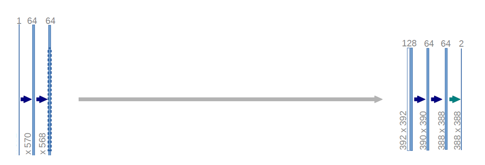
Skip connection의 목적은 축소 과정에서 약해진 세밀한 위치·경계 정보를 확대 경로에 직접 전달하는 것입니다. 두 경로가 제공하는 정보는 다음과 같이 서로 보완됩니다.
| 특징의 출처 | 주로 제공하는 정보 | 분할에서의 역할 |
|---|---|---|
| 축소 경로의 얕은 고해상도 특징 | 윤곽·질감·경계 등 세밀한 공간 단서 | 물체의 경계가 정확히 어디에 있는지 보완 |
| 깊은 층을 거쳐 확대되는 특징 | 넓은 입력 범위를 고려한 구조·의미적 문맥 | 해당 영역이 어떤 대상인지 판단하는 데 기여 |
Pooling으로 공간 해상도를 줄이면 큰 구조를 효율적으로 다룰 수 있지만, 서로 가까운 위치를 구별하는 세부 정보는 약해질 수 있습니다. Up-convolution으로 격자 크기를 키워도 축소 과정에서 사라진 정보를 모두 되찾는 것은 아닙니다. 그래서 축소 경로에서 보존한 고해상도 특징을 우회 전달하고, 확대 경로의 문맥 특징과 함께 사용합니다. 이 표의 역할은 경향을 설명한 것이며, 특정 층이 위치 또는 의미 정보만 담는다는 뜻은 아닙니다.
예를 들어 세포 분할에서 깊은 특징은 **“이 주변이 세포 영역인가?”**를 판단하는 문맥을 제공하고, 얕은 특징은 **“세포의 윤곽이 정확히 어디인가?”**를 판단할 단서를 보완합니다. 결합 뒤의 합성곱이 두 정보를 함께 가공해 픽셀별 분류에 필요한 특징을 만듭니다.
그림의 회색 연결과 오른쪽 블록은 Copy → Crop → Concat → Conv 순서로 읽습니다.
- Copy: 대응하는 축소 블록의 특징을 확대 경로로 전달합니다. 원본 입력 영상을 그대로 붙이는 것이 아니라, 합성곱으로 추출한 특징 맵을 전달합니다.
- Crop: 두 특징 맵의 공간 크기를 맞춥니다. 원 U-Net은 반복된 Valid convolution 때문에 대응하는 왼쪽 특징이 오른쪽 특징보다 크므로, 왼쪽 특징의 중앙 영역을 잘라 사용합니다.
- Concat: 크기를 맞춘 두 특징을 채널 방향으로 이어 붙입니다. 최상단에서는
392×392×64두 개를 결합해392×392×128을 만듭니다. 공간 크기는 유지되고 채널 수가 합쳐집니다. - Conv: 이어 붙인 위치 단서와 문맥 특징을 함께 가공합니다. 최상단의 두 3×3 합성곱은
392×392×128 → 390×390×64 → 388×388×64로 변환합니다.
각 연결에서 필요한 Crop 크기는 다음과 같습니다.
| 왼쪽에서 복사할 특징 | 오른쪽에서 필요한 크기 | 가장자리 Crop — 각 방향 |
|---|---|---|
64×64×512 |
56×56×512 |
위·아래·좌·우 각각 4픽셀 |
136×136×256 |
104×104×256 |
각각 16픽셀 |
280×280×128 |
200×200×128 |
각각 40픽셀 |
568×568×64 |
392×392×64 |
각각 88픽셀 |
여기서 Crop 픽셀은 각 특징 맵 좌표계의 단위입니다. Skip의 핵심 목적은 위치·경계 정보와 문맥의 결합이고, Crop은 원 U-Net에서 두 특징의 공간 크기를 맞추기 위한 절차입니다. 원 U-Net의 결합 방식은 채널을 이어 붙이는 Concatenation이며, ResNet의 원소별 덧셈과 다릅니다.
6. 최종 388×388×2 — 왜 마지막 채널은 2개일까?

마지막 청록 화살표는 1×1 Convolution입니다. 공간 크기 388×388은 유지하고 각 위치의 64차원 특징을 2개 클래스 점수로 변환합니다. 그림의 2는 전경·배경처럼 분류할 클래스 수의 예시이며 물체 개수나 RGB 채널을 뜻하지 않습니다.
클래스 방향 Softmax 후 각 픽셀의 클래스를 선택하면 388×388 라벨 맵을 얻습니다. 클래스가 K개인 문제라면 마지막 출력 채널을 K로 바꿉니다.
처음 572×572보다 출력이 작은 이유는
- 3×3 합성곱을 Padding 없이 반복하기 때문입니다.
- Upsampling은 격자를 확대하지만 반복해서 줄어든 경계를 모두 원상 복구하지는 않습니다.
- 이 예에서는 입력의 중앙 388×388 영역을 예측하며, 바깥쪽은 각 면 92픽셀의 주변 문맥에 해당합니다.
크기·채널 변화를 읽는 핵심 규칙
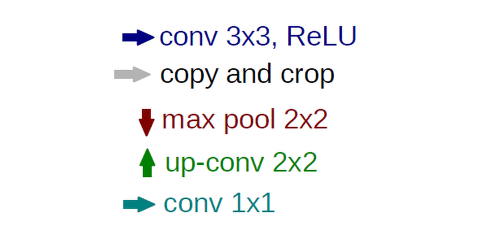
- 3×3 Valid Conv: 가로·세로는 각각 2 감소, 출력 채널은 필터 개수로 결정.
- 2×2 Max Pool: 가로·세로는 절반, 채널은 유지.
- 2×2 Up-conv: 이 구조에서는 가로·세로 2배, 채널 절반.
- Copy & Crop + Concat: 공간을 맞춘 뒤 채널을 이어 붙임.
- 1×1 Conv: 공간은 유지하며 최종 클래스 채널로 변환.
이 숫자는 원 논문의 Valid convolution U-Net 기준입니다. Same-padding을 쓰는 현대 변형에서는 중간 크기와 Crop 필요 여부가 달라질 수 있습니다.
출처: U-Net 원 논문 — 그림 1과 §2 Network Architecture.
Transpose convolution — 학습 가능한 업샘플링
자료: PDF 82쪽.
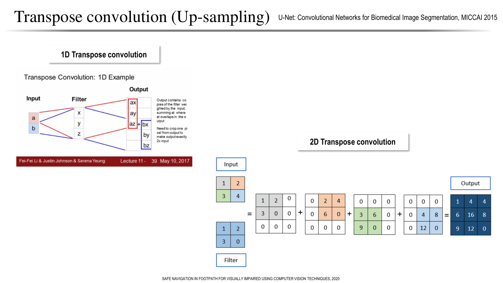
그림은 입력의 각 값이 필터를 통해 출력 영역에 기여하고 겹치는 위치가 합산되는 모습을 보여줍니다.
Transposed convolution은 Convolution을 행렬로 썼을 때 전치된 연결 구조에 해당합니다.
원래 입력을 정확히 되찾는 역연산은 아닙니다.
Stride·Kernel·Padding으로 출력 크기를 정하고, 가중치를 학습해 해상도를 확장합니다.
겹침이 불균일하면 Checkerboard artifact가 생길 수 있어 보간 후 Conv 등 다른 업샘플링 방식도 사용됩니다.
U-Net Training (1/2) — Overlap-tile과 Elastic augmentation
자료: PDF 83쪽.
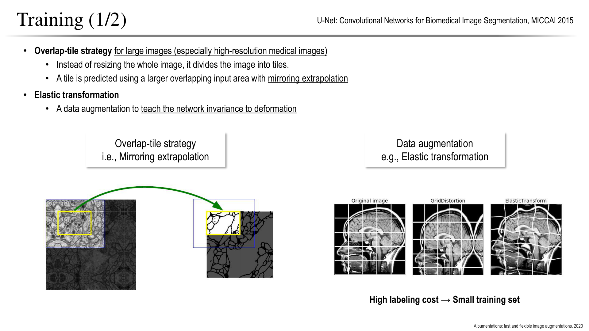
Overlap-tile — 주변 문맥을 겹쳐 읽고 중앙 예측을 이어 붙이기
큰 영상은 타일로 나누어 처리하되, 출력할 영역보다 넓은 주변 문맥을 입력으로 제공합니다. 원 U-Net은 Padding 없는 합성곱을 반복하므로, 구조도에서는 572×572 입력으로 중앙 388×388 영역을 예측합니다. 인접한 입력 타일은 주변 문맥이 겹치도록 가져오고, 각 타일의 중앙 예측 영역을 이어 붙입니다. 이렇게 하면 GPU 메모리에 맞춰 처리하면서도 원 영상 전체를 작게 줄이지 않고 분할할 수 있습니다.
Mirroring — 원본 영상 가장자리에서 부족한 문맥 보충하기
영상 내부에서는 주변 픽셀을 실제 영상에서 가져올 수 있지만, 원본 영상의 가장자리에서는 필요한 문맥 일부가 영상 밖에 있어 존재하지 않습니다. Mirroring은 경계 안쪽의 픽셀을 거울처럼 반사해 입력의 바깥쪽을 확장하는 방법입니다. 이를 통해 가장자리 픽셀도 중앙 예측 영역에 놓아 분할할 수 있습니다.
| 구분 | 적용 위치와 역할 |
|---|---|
합성곱의 padding=0 |
각 합성곱 층에서 테두리 값을 추가하지 않고 필터가 입력 안에 들어오는 위치만 계산합니다. 그 결과 특징 맵이 작아집니다. |
| 입력 영상의 Mirroring | 원본 영상 밖에 필요한 주변 영역을 반사된 값으로 보충합니다. 입력을 확장한 뒤에도 내부 합성곱은 padding=0을 유지할 수 있습니다. |
의료 영상에서 세포·조직이 가장자리에 걸쳐 있는 경우, 바깥을 0으로 채우면 인위적인 검은 영역과 급격한 밝기 경계가 생길 수 있습니다. Mirroring은 인접한 영상의 밝기·질감을 반사해 이러한 경계 영향을 줄이는 데 도움이 될 수 있습니다. 이는 가장자리의 예측 품질을 유지하는 관점에서 해석할 수 있지만, 의료 영상에서 항상 정확도를 높인다는 보장은 아닙니다.
Mirroring은 실제 관측 영상의 픽셀 값을 재사용해 경계 밖의 문맥을 보충하는 방법입니다. 따라서 반사에 사용한 값 자체를 “실측 데이터가 아니다”라고 표현하면 부정확합니다. 의료기기로 측정한 값을 가져오되, 그 값을 반사된 위치에 배치합니다. 값의 출처는 실제 관측 데이터이지만, 확장된 위치의 조직을 직접 측정한 것은 아니라는 점을 구분해야 합니다. 즉, 확장된 영역의 공간적 배치는 주변 영상에 근거한 근사이며 실제 영상 바깥의 조직을 복원한 결과는 아닙니다.
padding=0은 각 합성곱에서 테두리 값을 추가하지 않는 설정이고, Mirroring은 필요한 경계 문맥을 관측값의 재사용으로 보충하는 처리입니다. 논문이 명시한 목적은 원본 영상 가장자리에서 부족한 문맥을 보충해 전체 영상을 분할하는 것입니다.
여기서 Mirroring은 입력의 경계를 확장하는 처리이며, 영상을 좌우로 뒤집어 학습 샘플을 늘리는 Flip augmentation과는 역할이 다릅니다.
출처: U-Net 원 논문 — §1과 그림 2의 Overlap-tile 설명.
Elastic augmentation — 조직·세포의 변형을 학습하기
Elastic transformation은 조직·세포의 변형을 모사해 적은 학습 영상에서도 다양한 모양을 보게 합니다.
영상과 정답 마스크에 같은 기하 변환을 적용해야 하며, 평가 타일이 학습 영상과 겹쳐 데이터 누수가 생기지 않도록 원본 단위로 분리하는 것이 중요합니다.
U-Net Training (2/2) — 붙은 세포 사이 경계를 강조하는 손실
자료: PDF 84쪽.
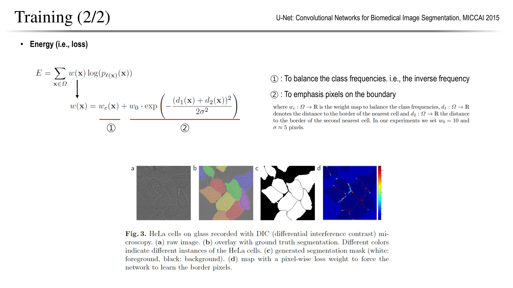
클래스 빈도 가중치와 경계 가중치를 합쳐 픽셀별 손실의 중요도를 다르게 줍니다.
wc는 클래스 균형, d1·d2는 가장 가까운 두 개체 경계까지의 거리입니다.
두 세포 사이 좁은 틈에서 가중치를 크게 해 서로 붙은 대상을 나누도록 유도합니다.
단순히 모든 윤곽 픽셀만 가중하는 식과는 다릅니다. 손실을 최소화하는 표기에서는 음의 로그 부호가 필요합니다.
U-Net Experiments — 세포 분할의 IoU 개선
자료: PDF 85쪽.

| 데이터 | 2015년 비교 기준 | U-Net | 절대 차이 |
|---|---|---|---|
| PhC-U373 | 0.83 | 0.9203 | +0.0903 |
| DIC-HeLa | 0.46 | 0.7756 | +0.3156 |
슬라이드는 ISBI Cell Tracking Challenge의 분할 IoU를 비교합니다.
U-Net은 특히 DIC-HeLa에서 큰 차이를 보입니다.
경계 가중치와 다중 해상도 특징·증강을 조합한 효과로 이해하되, 표 하나로 각 요소의 기여를 따로 확정할 수는 없습니다.
대회 이름에 Tracking이 들어가도 이 표의 값은 MOTA·IDF1이 아닙니다. 또 특정 두 세포 데이터의 결과를 모든 의료 영상의 성능으로 일반화해서는 안 됩니다.
3.5 SegFormer
SegFormer Overview — 강한 Encoder와 가벼운 Decoder
자료: PDF 86쪽.
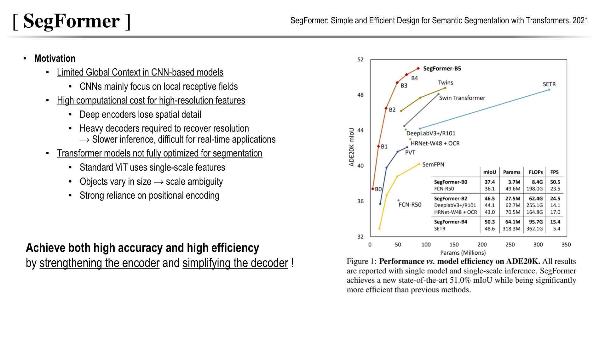
SegFormer는 Hierarchical Transformer Encoder인 MiT로 여러 해상도의 특징을 만들고, 단순 MLP Decoder로 합쳐 Semantic segmentation을 수행합니다.
작은 물체의 세부와 큰 장면의 문맥을 함께 사용하면서 Decoder 부담을 줄이는 방향입니다.
그림의 성능·연산량 곡선은 정확도뿐 아니라 비용도 비교해야 함을 보여줍니다.
CNN도 깊이·Dilated convolution 등으로 넓은 문맥을 얻을 수 있으므로 ‘CNN은 전역 문맥을 전혀 못 본다’는 의미는 아닙니다.
SegFormer Architecture — 계층 특징과 All-MLP 결합
자료: PDF 87쪽.

2021년 SegFormer는 분할 정확도를 확보하면서 계산량과 모델 복잡도를 줄이기 위해 Encoder와 Decoder를 함께 설계했습니다. 당시 ViT 기반 SETR의 단일 해상도 특징·큰 계산 비용과, 복잡한 분할 Decoder가 주요 개선 대상이었습니다.
Encoder — 분할에 필요한 다중 해상도 특징을 효율적으로 추출
| 개선하려던 한계 | 적용한 설계 | 목적 |
|---|---|---|
| ViT의 단일 저해상도 특징만으로 세밀한 위치와 큰 문맥을 함께 다루기 어려움 | 계층형 MiT의 네 Stage에서 입력의 1/4·1/8·1/16·1/32 특징 생성 |
얕은 공간 단서와 깊은 문맥을 Decoder에 함께 제공 |
| 겹치지 않는 패치 사이의 국소 연속성 약화 | Overlap patch embedding | 이웃 패치가 입력을 공유해 경계 주변 정보를 연결 |
| 고해상도에서 모든 토큰 쌍을 비교하는 Attention 비용 | Efficient attention에서 K·V 토큰 압축 | Query 위치를 유지하며 연산 부담 완화 |
| 고정 크기 위치 임베딩을 다른 해상도에서 보간해야 하는 문제 | 별도 위치 임베딩 대신 3×3 Depth-wise Conv를 포함한 Mix-FFN | 공간 단서를 제공하며 해상도 변경에 따른 보간 의존성 감소 |
위치 임베딩을 없애도 위치 정보가 사라지는 것은 아닙니다. 격자 구조·합성곱·Padding이 공간 단서를 제공합니다.
Decoder — Encoder가 추출한 국소·전역 정보를 가볍게 결합
기존 분할 모델은 문맥 확보와 해상도 복원을 위해 무거운 문맥 모듈이나 반복적인 합성곱을 사용했습니다. SegFormer는 Encoder가 이미 여러 해상도와 넓은 문맥을 제공하므로, Decoder는 그 특징을 간단히 융합하도록 설계했습니다.
- Stage별 Linear로 채널 수를 통일합니다.
- Bilinear upsampling으로 공간 크기를
H/4×W/4에 맞춥니다. - 채널 방향으로 Concat하고 Linear로 융합합니다.
- 클래스 점수를 예측하고, 필요하면 원본 해상도로 보간합니다.
이렇게 얕은 층의 국소 정보와 깊은 층의 전역 문맥을 결합하면서 Decoder의 파라미터·계산 비용을 줄입니다. All-MLP는 특징 변환·융합을 Linear 중심으로 한다는 뜻이며, 크기 조절을 위한 보간도 사용합니다. 또한 Decoder의 Attention으로 새 문맥을 계산하는 구조는 아닙니다.
출처: SegFormer 원 논문 — §1, §3.1–3.3.
SegFormer Efficient attention — Query는 유지하고 K·V 압축
자료: PDF 88쪽.

목적은 고해상도 분할에 필요한 위치별 특징을 유지하면서, Attention의 계산량과 메모리 사용량을 줄이는 것입니다.
일반 Attention은 N개 Query와 N개 Key의 N×N 관계를 계산하므로, 토큰 수가 늘면 관계 행렬의 크기가 제곱으로 증가합니다.
SegFormer는 Query를 유지하고 Key·Value만 공간적으로 압축해 각 위치가 참조할 대상의 수를 줄입니다.
| 구성 | 처리 방식 | 얻는 이득 |
|---|---|---|
| Query | 현재 Stage의 N개 위치를 유지 | 각 위치에 대응하는 출력 특징을 생성 |
| Key·Value | 토큰 수를 N/R개로 압축 | 비교·정보 집계 비용과 Attention 관계 행렬의 메모리 감소 |
여기서 Query 위치를 유지한다는 것은 현재 Stage의 특징 맵 격자를 유지한다는 뜻이며, 원본 이미지의 모든 픽셀을 그대로 유지한다는 뜻은 아닙니다.
예를 들어 현재 Stage의 토큰이 N=4,096개이고 R=64이면 K·V는 64개로 줄어듭니다. Attention Head 하나의 관계 행렬을 비교하면 다음과 같습니다.
| 방식 | 관계 행렬 크기 | 관계 수 |
|---|---|---|
| 일반 Attention | 4,096×4,096 |
16,777,216개 |
| K·V 압축 후 | 4,096×64 |
262,144개 — 기존의 1/64 |
관계 수가 1/64로 줄어도 모델 전체가 64배 빨라지는 것은 아닙니다. K·V 압축, Linear 변환, FFN 등 다른 연산도 필요합니다.
슬라이드의 R=[64,16,4,1]은 Stage별 토큰 수의 감소 비율이며, 한 변의 축소 비율과 다릅니다. 초기 Stage는 토큰이 많아 크게 압축하고, 마지막 Stage는 이미 토큰이 적으므로 추가 압축하지 않습니다.
압축된 K·V는 전체 공간을 요약하므로 각 Query는 넓은 문맥을 참조하면서 비용을 절감할 수 있습니다. 다만 세부 정보가 압축되므로 모든 원본 토큰 쌍을 직접 비교하는 것과 정보량이 같지는 않습니다. 참조 범위를 윈도우 내부로 제한하는 Swin의 방식과도 구분됩니다.
출처: SegFormer 원 논문 — §3.1 Efficient Self-Attention.
SegFormer Mix-FFN — FFN에 공간 섞기 추가
자료: PDF 89쪽.

Mix-FFN은 이웃 위치의 정보를 섞어 공간 단서를 보완하고, 고정 크기 위치 임베딩에 대한 의존성을 줄이는 설계입니다.
주요 이점은 학습 때와 다른 해상도의 영상을 처리할 때 위치 임베딩을 보간할 필요가 없다는 것입니다.
해상도가 달라질 때 기존 위치 임베딩의 한계
학습 가능한 절대 위치 임베딩은 학습 시 토큰 격자 크기에 맞춰져 있습니다. 입력 해상도가 달라져 격자가 커지면, 기존 위치 임베딩을 그대로 더할 수 없어 보간으로 크기를 맞춰야 합니다.
입력의 가로·세로를 각각 1/4로 줄인 특징 격자를 사용한다고 가정하면 다음과 같습니다.
| 구분 | 입력 영상 | 토큰 격자 | 고정 크기 위치 임베딩 사용 시 |
|---|---|---|---|
| 학습 | 512×512 |
128×128 |
학습한 격자 크기의 위치 임베딩 사용 |
| 추론 | 1024×1024 |
256×256 |
위치 임베딩을 새 격자 크기로 보간 |
이 보간은 위치 표현을 조정하는 연산입니다. 학습 때와 위치 표현이 달라져 분할 성능에 영향을 줄 수 있습니다.
Mix-FFN의 개선 — 격자 크기에 묶이지 않는 공간 연산
일반 FFN의 MLP는 각 토큰을 독립적으로 처리합니다. 앞선 Attention에서 다른 위치의 정보를 받더라도 FFN 자체가 이웃 토큰을 직접 섞지는 않습니다.
Mix-FFN은 Token을 공간 격자로 해석하고, MLP 사이에 3×3 Depth-wise convolution을 넣어 이웃 정보를 결합합니다.
Linear 채널 변환 → 3×3 Depth-wise Conv → GELU → Linear 채널 변환 → 입력과 잔차 덧셈
같은 3×3 필터를 격자의 각 위치에 적용하므로 격자가 커져도 필터 크기를 바꾸거나 위치 임베딩을 보간할 필요가 없습니다.
Depth-wise는 채널별 필터로 공간 연산을 하고, 채널 간 조합은 Linear 층이 담당합니다.
Zero-padding의 경계 조건도 위치 단서를 제공합니다.
Mix-FFN이 정확한 절대 좌표를 직접 입력하는 것은 아니며, 국소 공간 정보와 위치 단서를 학습하도록 만드는 구조입니다.
따라서 다양한 입력 해상도에 대응하기 쉽고, 위치 임베딩 보간에 따른 성능 저하 요인을 줄일 수 있습니다.
다만 해상도가 달라져도 정확도가 항상 같다는 뜻은 아닙니다.
입력 크기에 따른 계산량 증가는 여전히 있으며, 영상·특징 맵의 크기를 조절하는 보간까지 모두 없어진다는 뜻도 아닙니다.
출처: SegFormer 원 논문 — §3.1 Mix-FFN 및 §4.2 위치 임베딩 비교.
SegFormer Overlap patch merging — 패치 경계의 연속성
자료: PDF 90쪽.

목적은 해상도를 줄여 계산 부담을 낮추면서, 인접 패치 사이의 국소 연속성을 보완하는 것입니다.
개선하려던 한계 — 패치를 나누는 경계와 물체 경계는 다름
겹치지 않는 패치는 각 영역을 따로 토큰으로 변환하므로, 패치 생성 단계에서 경계 양쪽의 정보를 함께 다루기 어렵습니다. 예를 들어 세포 윤곽이나 도로 가장자리가 패치 사이를 지나면, 실제로 이어진 구조가 서로 다른 토큰으로 나뉩니다. 이후 Attention으로 정보를 교환할 수 있지만, SegFormer는 토큰을 만드는 단계부터 이웃 영역을 함께 보도록 개선했습니다.
개선 방법 — Kernel을 Stride보다 크게 설정
겹치는 Convolution으로 입력을 특징 벡터로 변환합니다. 인접한 출력 위치가 참조하는 입력 영역이 겹치므로, 패치 경계 주변의 정보를 공유합니다.
| 위치 | Kernel / Stride / Padding | 공간 변화 | 이웃 영역 공유 |
|---|---|---|---|
| 첫 Stage | 7 / 4 / 3 |
입력의 약 1/4 | 가로로 인접한 두 7×7 영역이 3열을 공유 |
| 이후 Stage | 3 / 2 / 1 |
이전 Stage의 약 1/2 | 가로로 인접한 두 3×3 영역이 1열을 공유 |
공유 범위는 경계 Padding을 제외한 내부 위치 기준이며, 세로 방향에도 같은 원리가 적용됩니다. 첫 Stage는 이미지 픽셀을, 이후 Stage는 이전 특징 맵의 값을 공유합니다.
얻는 이득과 한계
예를 들어 512×512 입력은 128×128 → 64×64 → 32×32 → 16×16 격자로 줄어듭니다. 다운샘플링을 유지하면서도 각 토큰이 이웃의 일부를 함께 참조하므로, 국소 구조를 연결하는 데 도움이 됩니다. 다만 다운샘플링으로 줄어든 모든 세부 정보를 보존하거나, 물체 경계를 항상 정확하게 복원한다는 뜻은 아닙니다.
제목의 Merging은 Swin의 2×2 토큰 Concatenation과 같은 구체 연산이 아니라, 겹치는 Conv 기반 Embedding입니다. 공식 구현은 Conv 뒤에 LayerNorm을 적용합니다.
출처: SegFormer 원 논문 — §3.1 Overlapped Patch Merging, 공식 Encoder 구현.
SegFormer MLP decoder — 서로 다른 Stage를 같은 격자로
자료: PDF 91쪽.
목적은 얕은 Stage의 세밀한 공간 단서와 깊은 Stage의 넓은 문맥을 결합하면서, Decoder의 파라미터와 연산 부담을 줄이는 것입니다.
개선하려던 한계 — 깊은 특징만으로는 부족하고 복잡한 Decoder는 비쌈
마지막 Stage만 사용하면 앞쪽 Stage의 고해상도 단서를 충분히 활용하지 못합니다. 반면 문맥 확보와 해상도 복원을 위해 많은 공간 합성곱을 쌓으면 Decoder가 무거워집니다. SegFormer는 계층형 Transformer가 이미 추출한 국소·전역 정보를 간단히 융합하는 방향을 택했습니다. 이 가벼운 Decoder의 효과는 Encoder가 제공하는 특징에 기반합니다.
처리 과정 — 채널 투영 → 격자 맞춤 → Concat → 융합 → 분류
512×512 입력과 공통 Decoder 채널 C를 가정하면 다음과 같습니다. 크기는 높이×너비×채널입니다.
| 단계 | 변환 | 필요한 이유 |
|---|---|---|
| Stage별 Linear | 각 Stage의 채널 Cᵢ → C |
서로 다른 특징을 공통 폭으로 투영 |
| Bilinear resize | 128²·64²·32²·16² → 모두 128² |
같은 이미지 위치에 대응하는 특징을 결합하도록 격자 통일; Stage 1은 크기 유지 |
| 채널 Concat | 네 개의 128×128×C → 128×128×4C |
여러 Stage의 정보를 이어 붙임 |
| 특징 융합 | 4C → C |
위치마다 Stage별 정보를 학습해 조합 |
| 클래스 예측 | C → K |
128×128×K 클래스 점수 생성 |
예측 점수는 필요에 따라 원본 크기로 보간합니다. 1/4 해상도에서 융합하므로 원본 격자에서 모든 특징을 합치는 것보다 공간 연산 부담이 작습니다. 다만 Upsampling 자체가 사라진 세부 정보를 복원하는 것은 아니며, 얕은 Stage의 특징이 이를 보완합니다.
공식 구현에서 Stage별 투영은 Linear, 융합과 분류는 1×1 Conv를 사용합니다. 1×1 Conv는 각 위치에서 채널을 조합하는 연산입니다. All-MLP는 Resize·Concat이 없다는 뜻이 아니라, 특징 변환·융합을 가벼운 채널 연산 중심으로 수행한다는 뜻입니다. Decoder에 별도의 Self-attention을 추가하지도 않습니다.
출처: SegFormer 원 논문 — §3.2 Lightweight All-MLP Decoder, 공식 Decoder 구현.
SegFormer Experiments (1/2) — 문맥·Decoder 폭·해상도 변화
자료: PDF 92쪽.

왼쪽 Effective Receptive Field는 각 출력에 영향을 미치는 입력 영역을 시각화합니다. SegFormer는 Stage와 Head에서 넓은 문맥을 활용하는 경향을 보입니다. 이는 정성 관찰이며 분할 정확도 자체를 직접 나타내는 색상표는 아닙니다.
| Decoder 채널 C | FLOPs | Params | ADE20K mIoU |
|---|---|---|---|
| 256 | 25.7 | 24.7 | 44.9 |
| 768 | 62.4 | 27.5 | 45.4 |
| 2048 | 304.4 | 43.4 | 45.6 |
C=768→2048에서 연산량은 약 4.9배인데 mIoU는 +0.2포인트입니다. 무조건 넓히기보다 성능 포화와 비용을 함께 봐야 합니다. 표의 연산량·파라미터 단위는 각각 G·M입니다.
Cityscapes의 평가 해상도가 768×768→1024×2048로 바뀔 때 PE 구성은 77.3→74.0(−3.3), Mix-FFN은 **80.5→79.8(−0.7)**입니다. 이 조건에서 해상도 변화에 덜 민감했으며, 모든 해상도에서 손실이 없다는 뜻은 아닙니다.
SegFormer Experiments (2/2) — 장면별 경계와 작은 대상
자료: PDF 93쪽.

Cityscapes·ADE20K·COCO-Stuff의 행별 예시에서 SegFormer, SETR, DeepLabV3+의 출력을 비교합니다. 빨간 박스는 작은 표지·경계처럼 차이가 드러나는 영역을 강조합니다.
같은 행의 같은 대상을 비교해야 하고, 서로 다른 데이터셋의 색을 같은 클래스라고 가정하면 안 됩니다. 이 페이지는 정성 결과라 FPS나 모든 모델의 mIoU 우열을 직접 제공하지 않습니다. 구조 요점은 ‘계층 Encoder로 문맥을 만들고 가벼운 Decoder로 합친다’입니다.
3.6 SAM
SAM Overview — Promptable segmentation
자료: PDF 94쪽.
개선하려던 한계 — 새 대상·과제마다 분할 모델을 준비하는 비용
특정 범주와 데이터셋에 맞춘 분할 모델은 새로운 대상·환경에 적용할 때 추가 주석과 학습이 필요할 수 있습니다. SAM은 “정해진 클래스의 픽셀을 찾기”에서 “Prompt가 가리키는 영역을 분할하기”로 과제를 바꾸어, 하나의 모델을 여러 분할 작업에 재사용하려 했습니다.
개선 방법과 이득 — Prompt로 대상을 지정하고 마스크를 재사용
점·박스·이전 마스크로 원하는 영역을 지정합니다. 사람의 클릭뿐 아니라 다른 검출기가 만든 박스도 Prompt로 사용할 수 있어, 대화형 주석과 자동 파이프라인을 같은 분할 모듈로 구성할 수 있습니다. 이는 새 작업의 데이터 수집·재학습 부담을 줄이려는 방향이며, 모든 도메인에서 추가 학습이 불필요하다는 뜻은 아닙니다.
무거운 이미지 인코딩은 한 번 계산하고, 가벼운 Decoder로 Prompt 변경에 반복 대응합니다.
원 SAM의 일반 공개 모델은 시각 Prompt 중심입니다. 슬라이드의 Text phrase는 논문의 별도 탐색 실험으로 뒤에서 구분합니다. ‘Segment Anything’은 모든 개념·모든 영상에서 정확한 결과를 보장하거나 자동으로 물체 이름을 붙인다는 뜻은 아닙니다.
SAM Dataset & Labeling — 모델과 데이터 엔진의 반복 개선
자료: PDF 95쪽.

개선하려던 한계 — 마스크 주석은 비싸고 인터넷에서 쉽게 모으기 어려움
- 범용 분할에는 다양한 마스크가 필요하지만, 픽셀 단위 수작업만으로 규모를 늘리기는 어렵습니다.
- 모델로 주석을 돕고, 모은 주석으로 모델을 개선해 자동화 범위를 넓히는 Data engine을 사용했습니다.
- SA-1B는 약 1,100만 장의 이미지와 11억 개의 마스크로 구성됩니다. 이미지 수와 마스크 수는 다르며 한 이미지에 여러 개체·부위가 포함될 수 있습니다.
| 수집 단계 | 사람과 모델의 역할 | 슬라이드의 마스크 규모 |
|---|---|---|
| Assisted manual | 모델이 제안하고 사람이 편집·추가 | 4.3M |
| Semi-automatic | 모델이 일부를 찾고 사람이 빠진 대상 추가 | 누적 10.2M |
| Fully automatic | 격자 Prompt 등으로 자동 마스크 생성 | 약 1.1B |
얻는 이득 — 사람의 시간을 어려운 대상에 쓰고 수집 규모 확대
- 처음에는 수정 시간을 줄이고, 다음에는 사람이 놓치기 쉬운 대상을 추가하며 다양성을 높입니다.
- 마지막에는 격자 점 Prompt로 후보를 생성하고 품질·안정성 필터와 NMS로 선별해 대규모 수집을 가능하게 합니다. SA-1B의 약 11억 마스크를 사람이 모두 직접 그린 것은 아닙니다.
- 그림의 약 400배는 특정 비교 데이터셋의 마스크 수와 비교한 규모입니다. 범주 수나 정확도가 400배라는 의미는 아닙니다.
- 마스크 수가 많아도 개념·지역·촬영 조건의 편향과 주석 품질은 별도로 평가해야 합니다.
출처: Meta 공식 설명 — SA-1B Data engine.
SAM Architecture — 이미지 재사용과 Prompt 조건화
자료: PDF 96쪽.
개선하려던 한계 — 클릭할 때마다 무거운 이미지 처리를 반복하면 느림
사용자가 Prompt를 수정하는 동안 원본 이미지는 그대로입니다. 따라서 변하지 않는 이미지 처리와 매번 달라지는 Prompt 처리를 분리해, 무거운 연산 결과를 재사용하도록 설계했습니다.
| 모듈 | 처리와 개선 의도 | 얻는 이득 |
|---|---|---|
| Image Encoder | MAE 사전학습 ViT로 이미지 특징을 먼저 추출 | 같은 이미지의 특징을 여러 Prompt에 재사용 |
| Prompt Encoder | 점·박스를 Sparse embedding, 입력 마스크를 Dense embedding으로 변환 | 다른 형태의 사용자 지시를 모델이 처리할 특징으로 표현 |
| Mask Decoder | 이미지·Prompt 특징을 결합해 후보 마스크와 품질 점수 생성 | 이미지 Encoder를 반복 실행하지 않고 마스크 갱신 |
원 SAM의 대표 입력은
- 긴 변을 1024로 맞춘 뒤 Padding하여 인코딩하고, 64×64×256 이미지 Embedding을 만듭니다.
- 같은 이미지에서 클릭만 바뀌면 이미지 Encoder를 다시 실행할 필요가 없습니다.
흐름은 이미지 → Image Encoder → 특징 저장 → Prompt 입력·수정 → Prompt Encoder와 Mask Decoder → 마스크입니다.
빠른 반복 응답은 이미지 특징을 미리 계산한 조건의 이득이며, 최초 인코딩 비용까지 사라지는 것은 아닙니다. 이미지가 바뀌면 다시 인코딩해야 합니다.
점·박스에는 위치 표현과 종류 Embedding이 사용됩니다.
슬라이드의 CLIP Text Encoder 경로는 별도 Text-to-mask 변형이며 기본 공개 체크포인트의 표준 입력 기능으로 혼동하면 안 됩니다.
출처: 원 SAM 공식 사용법 — 이미지 설정과 반복 예측, 공식 Prompt Encoder 구현.
SAM Mask decoder — 여러 답이 가능한 Prompt
자료: PDF 97쪽.
개선하려던 한계 — 점 하나만으로는 원하는 분할 단위를 알기 어려움
예를 들어 사람이 입은 옷 위를 클릭하면, 원하는 영역이 옷인지 사람 전체인지 모호할 수 있습니다.
하나의 마스크만 강제하면 여러 유효한 해석을 충분히 표현하기 어렵습니다.
SAM은 Prompt에 맞춘 가벼운 마스크 생성과 여러 후보 출력으로 대응했습니다.
Ambiguity — 같은 Prompt에 여러 타당한 분할이 가능한 상태
Ambiguity(모호성)는 주어진 Prompt만으로 사용자가 원하는 대상이나 분할 범위를 하나로 정할 수 없는 상태입니다. 영상이 흐릿하거나 모델이 자신 없어 하는 상황만을 뜻하지 않습니다.
영상이 선명해도 점 하나는 위치만 알려주므로, 대상의 전체와 부분 중 무엇을 선택할지는 불명확할 수 있습니다.
예를 들어 셔츠의 소매 위를 클릭하면 다음 영역이 모두 그 점을 포함할 수 있습니다.
| 가능한 해석 | 마스크가 나타내는 범위 |
|---|---|
| 하위 부위 | 소매 영역 |
| 부분 | 셔츠 전체 |
| 전체 대상 | 셔츠를 입은 사람 전체 |
이는 모호성을 설명하는 예시이며, 실제 모델이 항상 이 세 영역을 정확히 출력한다는 뜻은 아닙니다.
왜 여러 마스크를 제시할까? — 하나로 섞지 않고 유효한 해석을 남기기
모호한 Prompt에 단일 출력만 강제하면 서로 다른 정답 해석이 학습 과정에서 충돌해, 어느 해석에도 잘 맞지 않는 절충된 마스크를 만들 수 있습니다.
SAM은 서로 다른 해석을 별도 마스크 후보로 출력하고, 각 후보의 예상 IoU 점수도 제공합니다.
따라서 여러 후보는 서로 다른 물체를 반드시 하나씩 찾는 결과가 아니라, 같은 Prompt에 대한 대안적인 분할 결과입니다.
후보 수는 어떻게 결정할까? — 모호성에 따라 늘어나는 개수가 아닌 설계값
원 SAM의 다중 마스크 후보 수는 모델 설계 시 정한 설정값이며, 기본값은 num_multimask_outputs=3입니다.
입력의 모호성을 측정해 후보 개수를 자동으로 늘리거나 줄이지 않습니다. 논문은 전체·부분·하위 부위처럼 중첩되는 흔한 모호성을 다루는 데 3개가 충분했다고 설명합니다.
따라서 3은 발견한 물체 수나 정답 수가 아니라, 대안적인 해석을 표현하도록 마련한 후보 슬롯 수입니다. 각 슬롯이 전체·부분·하위 부위 중 하나에 고정되는 것도 아닙니다.
공식 구현은 기본적으로 마스크 토큰을 3+1=4개 두고, 실행 설정에 따라 반환할 출력을 구분합니다.
| 실행 설정 | 사용하는 마스크 토큰 | 반환 결과 |
|---|---|---|
multimask_output=True |
다중 후보용 토큰 3개 | 대안 마스크 3개와 각각의 예상 IoU |
multimask_output=False |
별도의 단일 출력용 토큰 1개 | 마스크 1개와 예상 IoU |
단일 출력 모드는 다중 후보 3개 중 최고 점수 하나를 고르는 방식이 아닙니다.
별도의 단일 출력용 토큰에서 나온 마스크를 반환합니다. 다중 출력 후 사용자가 예상 IoU로 하나를 선택하는 것은 별도의 선택 절차입니다.
사용자는 후보를 선택하거나 전경·배경 점, 박스를 추가해 의도를 명확히 할 수 있습니다.
예상 IoU가 가장 높은 후보도 사용자가 원한 범위와 다를 수 있으므로, 품질 예측과 사용자 의도는 구분해야 합니다.
동작과 이득 — 조건에 따라 마스크를 만들고 후보를 비교
Transformer Decoder는 Prompt/Output token과 이미지 Embedding 사이에 양방향 Cross-Attention을 적용합니다.
출력 토큰으로 만든 마스크별 가중치와 업샘플링한 이미지 특징을 결합해 마스크를 만들고, 다른 Head가 예상 IoU 품질을 예측합니다.
출력 토큰은 고정된 의미 클래스가 아니라 Prompt에 따른 마스크 후보를 만드는 역할입니다.
점 하나가 물체의 일부·전체·하위 부위를 뜻할 수 있어 여러 후보를 출력합니다.
모호한 Prompt의 다중 마스크 학습에서는 후보 중 가장 작은 손실을 주는 마스크 경로로 학습해 서로 다른 유효 영역을 표현하게 합니다.
추론에서는 정답이 없으므로 실제 IoU가 아니라 예측 품질이나 사용자 선택으로 후보를 고릅니다.
IoU score는 정답 마스크를 보고 계산한 평가 IoU가 아니라 모델이 추정한 품질 점수입니다.
다중 후보는 모호한 입력에 여러 해석을 남기고, 품질 점수는 자동 선택을 돕습니다. 잘못 고른 영역은 추가 전경·배경 점이나 박스로 수정할 수 있습니다.
다만 품질 점수가 높다는 것이 사용자가 의도한 대상임을 보장하지는 않습니다.
출처: SAM 원 논문 — §3 모호성 처리, 공식 Mask Decoder 구현.
SAM Zero-shot experiments (1/3) — 한 점 분할과 경계 추출
자료: PDF 98쪽.

검증하려는 이득은 적은 Prompt로 낯선 데이터에서도 유효한 영역을 만들고, 그 마스크를 다른 작업에 재사용할 수 있는가입니다.
여기서 Zero-shot은 해당 평가 과제·데이터셋에 맞춰 SAM을 추가 학습하지 않았다는 의미입니다.
왼쪽은 여러 데이터셋에서 단일 점 Prompt로 유효 마스크를 만드는 성능과 사람의 품질 평가입니다.
오른쪽은 격자 점에서 마스크를 모으고 중복을 제거한 뒤 경계를 추출하는 파이프라인입니다.
슬라이드의 16×16점×3후보=768은 필터링 전 후보 수입니다. NMS 이후에도 항상 768개가 유지되는 것은 아닙니다. Sobel 연산으로 마스크 경계를 만드는 전이가 곧 별도 경계 검출기로 학습했다는 뜻도 아닙니다.
따라서 이 페이지는 Prompt와 후처리를 바꾸어 분할 모델을 경계 추출에도 활용하는 유연성을 보여줍니다. 수작업 정답 경계와의 일치도, 후보 수, 처리 비용은 별도로 평가해야 합니다.
SAM Zero-shot experiments (2/3) — Proposal과 Instance mask
자료: PDF 99쪽.
검증하려는 이득은 고정 클래스에만 묶이지 않는 영역 후보 생성과, 기존 검출기의 박스를 마스크로 바꾸는 재사용성입니다.
Proposal은 물체일 가능성이 있는 영역을 제안하는 단계이고, Instance mask 평가는 각 대상의 픽셀 영역을 얼마나 잘 맞추는지 봅니다.
| LVIS Proposal 평가 — AR@1000 | 전체 | Small | Rare |
|---|---|---|---|
| ViTDet-H | 63.0 | 51.7 | 58.3 |
| SAM 단일 출력 | 54.9 | 42.8 | 62.0 |
| SAM 다중 출력 | 59.3 | 45.5 | 65.8 |
다중 출력은 단일 출력보다 전체 Recall을 +4.4포인트 높입니다. SAM은 Rare 범주에서는 강하지만 Small은 ViTDet보다 낮습니다. 추가 과제 학습 없이 폭넓은 후보를 만들 수 있다는 장점과 모든 크기에서의 우세는 다른 주장입니다.
Instance segmentation의 마스크 AP는 COCO에서 ViTDet-H 51.0 대 SAM 46.5, LVIS에서 46.6 대 44.7입니다. 사람의 마스크 품질 평가는 SAM이 높을 수 있어, 벤치마크 주석과 사람의 선호가 일치하지 않는 경우도 나타납니다. 이 실험의 Zero-shot은 분할 모듈 기준이며, 클래스와 박스를 공급하는 검출 과정까지 라벨 없이 해결했다는 뜻은 아닙니다.
실용적인 이득은 검출기 → 박스 Prompt → SAM 마스크로 연결할 수 있다는 점입니다. 표의 결과는 이러한 전이 가능성을 보여주지만, 전용 모델보다 모든 지표에서 우수하다는 근거는 아닙니다.
SAM Zero-shot experiments (3/3) — CLIP을 통한 Text-to-mask
자료: PDF 100쪽.
개선하려는 점은 좌표를 직접 찍는 대신 이름·설명으로 대상을 지정하되, 마스크별 텍스트 주석을 새로 만드는 비용을 줄이는 것입니다.
이 페이지는 텍스트를 인식하도록 학습 절차를 바꾼 SAM의 개념 검증 실험입니다.
학습 때 마스크 영역의 CLIP 이미지 임베딩을 Prompt로 쓰고, 추론 때 같은 공간에 정렬된 CLIP 텍스트 임베딩으로 대체합니다. 새 텍스트 주석을 직접 만들지 않고 이미지·텍스트 정렬을 이용합니다.
그림에서 wheel·grille은 성공하지만 wiper는 실패할 수 있으며, 추가 점 Prompt가 대상을 명확히 하는 데 도움을 줍니다.
기본 SAM에 문장을 넣으면 그대로 동작한다는 안내가 아닙니다. 텍스트 검출기와 SAM을 연결한 Grounded SAM 같은 구성도 별도 시스템입니다.
보충 출처: SAM 원 논문 §7.5 — 별도 Text-to-mask 학습과 한계.
SAM Summary — 모델·데이터·상호작용의 기반
자료: PDF 101쪽.

SAM의 핵심은 과제마다 전용 분할 모델을 만드는 부담을 줄이고, Prompt로 재사용할 수 있는 마스크 생성 기반을 제공한 것입니다.
| 개선하려던 한계 | 설계 방향 | 얻는 이득 |
|---|---|---|
| 대상·과제별 주석과 학습 부담 | 대규모 학습과 Prompt 기반 대상 지정 | 새 작업에 분할 모듈로 재사용 |
| 대규모 마스크 수집 비용 | 사람과 모델이 함께 개선되는 Data engine | 주석 효율·다양성·수집 규모 확대 |
| 반복 클릭마다 무거운 연산 | 이미지 특징 저장과 가벼운 Decoder | 빠른 수정·반복 상호작용 |
| Prompt의 분할 단위가 모호함 | 다중 마스크와 예상 품질 점수 | 여러 유효한 해석을 제시하고 선택 지원 |
마스크 생성, 객체 이름 판별, 영상 ID 유지는 서로 다른 기능입니다. 후속 계열은 다음처럼 부족한 축을 확장했습니다.
| 계열 | 주된 매체·입력 | 핵심 변화 |
|---|---|---|
| 원 SAM — 2023 | 이미지, 점·박스·마스크 Prompt | 재사용 가능한 Prompt 기반 마스크 생성 |
| SAM 2 — 2024 | 이미지·영상, 시각 Prompt | Streaming memory를 통한 영상 분할·전파 |
| SAM 3 — 2025 | 이미지·영상, 텍스트·시각 예시와 시각 Prompt | 개념에 해당하는 여러 개체의 검출·분할·추적 |
슬라이드의 원 SAM 공식 입력에 Text를 포함한 표기는 기본 공개 기능과 다릅니다.
원 SAM도 격자 점을 사용해 여러 영역을 자동 생성할 수 있으므로 모든 물체에 사람이 직접 클릭해야만 하는 것은 아닙니다. SAM 2가 시간축 메모리를, SAM 3가 개념 기반 전체 개체 예측을 확장한 차이로 읽습니다.
위 표는 강의에서 다룬 버전을 비교한 것으로, 최신 릴리스 전체 목록은 아닙니다. 복잡한 문장 추론·정밀 경계·가려진 대상·도메인 차이에서는 별도 검증과 보완이 필요합니다.
보충 출처: 원 SAM 공식 구현, SAM 2 공식 설명, SAM 3 공식 설명.
4. 전체 Summary — 출력과 평가 기준을 먼저 정하기
| 방향 | 핵심 질문 | 대표 설계 변화 | 평가에서 볼 것 |
|---|---|---|---|
| 검출 | 무엇이 어디에 있는가? | 후보별 CNN → 특징 공유·RPN → 중심점·Query 집합 | AP의 IoU 조건·크기별 결과·시간 |
| 추적 | 이전과 같은 대상인가? | 운동·외형 Matching → 약한 검출 재사용·Query 전파 | MOTA·IDF1·HOTA·누락·IDSW·FPS |
| 분할 | 정확히 어느 픽셀인가? | Dense FCN → 개체별 마스크·U자 Skip → 계층 Transformer·Prompt | mIoU/Mask AP·경계·Prompt 조건·비용 |
세 과제는 연결할 수 있지만 같은 문제는 아닙니다. 박스가 맞아도 마스크는 틀릴 수 있고, 프레임의 검출이 맞아도 ID는 바뀔 수 있으며, 자연스러운 마스크가 나와도 클래스 이름은 모를 수 있습니다. 실제 목적의 출력 단위와 오류 비용을 먼저 정한 뒤 모델과 평가 지표를 선택해야 합니다.
5. 참고 자료
기본 설명·그림·실험 수치의 출처는 강의 PDF입니다. 아래는 원 구조와 용어를 더 확인하기 위한 논문·공식 자료입니다.
- 검출: R-CNN, Fast R-CNN, Faster R-CNN, CenterNet — Objects as Points, DETR.
- 추적: HOTA·TrackEval, ByteTrack, TrackFormer.
- 분할: FCN, Mask R-CNN, U-Net, SegFormer, SAM.
기준 본문은 기존 Markdown입니다. 수식·도표는 온라인 렌더러를 사용하며, 원문과 도표 원문으로도 확인할 수 있습니다.